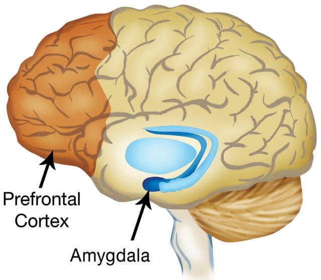
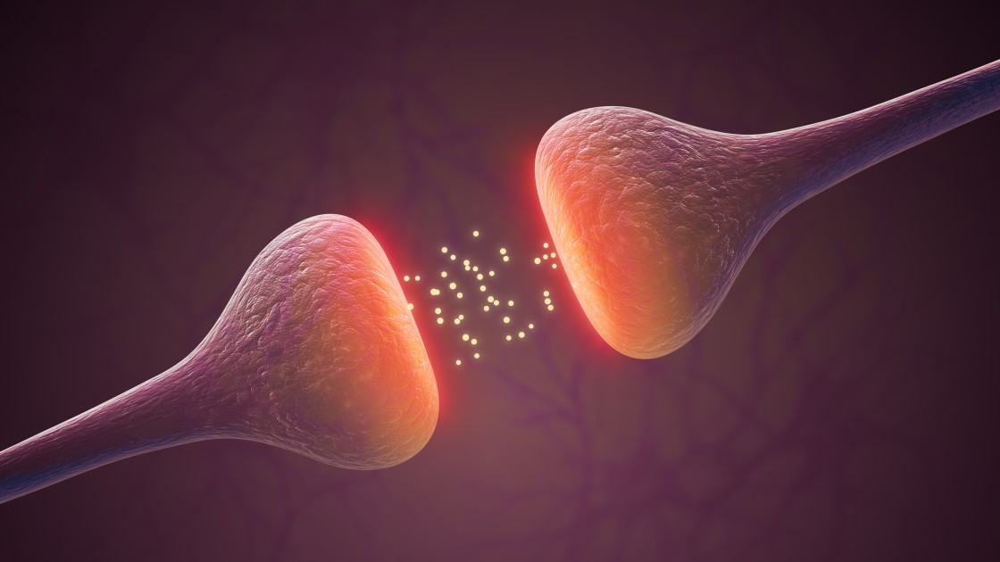

Health & Well-being: What You Will Learn
Two health problems will guide this unit: Major Depressive Disorder and problematic social-media use. We will investigate why they develop, how psychologists study them, and what can be done to help.
Two People. Two Health Problems. Many Questions.
Maya — Major Depressive Disorder
Maya has been diagnosed with Major Depressive Disorder (MDD). She has experienced persistent low mood, loss of interest in activities she previously enjoyed, difficulty sleeping and problems concentrating. But knowing that Maya has MDD does not explain why she developed it.
What could be contributing to Maya's depression?
Leo — Problematic Social-Media Use
Leo spends increasing amounts of time checking social media, including when he intends to study or sleep. He often reaches for his phone when stressed and finds it difficult to reduce his use even when it interferes with other parts of his life. But describing Leo's behaviour does not explain why it developed.
What could be contributing to Leo's behaviour?
Our Two Focus Areas
Throughout this unit, our selected mental health disorder is Major Depressive Disorder (MDD). Our selected health problem is problematic social-media use. The IB guide uses social media addiction as one possible health problem. In this course, we will generally use the more cautious term problematic social-media use rather than assuming that every pattern of excessive use should automatically be classified as an addiction.
Why Might Maya Develop MDD?
Biological
Some people may have greater biological vulnerability to depression. Psychologists can investigate factors such as genetic vulnerability, brain function and neurotransmission. But finding a biological process associated with depression does not automatically prove that it caused Maya's MDD.
Cognitive
How Maya interprets experiences may also matter. For example, repeatedly interpreting setbacks as evidence that 'nothing will ever improve' could contribute to patterns of thinking associated with depression. Later, we will examine how cognitive models such as Beck's attempt to explain this.
Environmental
Experiences can also contribute to vulnerability. Persistent stress, major negative life events or difficult social circumstances may increase the risk of depression. However, experiencing adversity does not mean that a person will inevitably develop MDD.
Maya's depression does not need to have one single cause. Biological vulnerability, patterns of thinking and environmental experiences may interact.
Why Might Leo's Social-Media Use Become Problematic?
Social Learning
Leo sees friends and influencers repeatedly checking, posting and receiving attention online. Observing other people being rewarded can make behaviours more likely to be copied, while likes, replies and other responses may reinforce Leo's own behaviour. Later, we will use Social Learning Theory to examine this process more carefully.
Stress
Leo often checks social media when he feels stressed. If scrolling temporarily reduces unpleasant feelings, using social media may become a coping response that is repeated. This creates an important question: does stress contribute to problematic use, can problematic use contribute to stress, or can both occur?
Social & Environmental Context
Leo's behaviour also occurs within a social environment. Peer expectations, constant access to technology and patterns of online interaction may influence when and how often he uses social media. The behaviour therefore cannot be understood only by looking at Leo as an isolated individual.
Problematic social-media use can also have multiple influences. Social learning, stress and the wider social environment may interact.
Their problems are different, but psychologists can ask similar questions.
For both Maya and Leo, we can ask:
- What exactly is the health problem?
- How is it being measured?
- What factors could contribute to it?
- How might different factors interact?
- Does the evidence show association or causation?
- What could be changed to prevent or treat the problem?
This is why Health & Well-being is not simply a list of disorders, theories and treatments.
Psychologists are trying to explain health outcomes using evidence.
Psychologists are also interested in how common health problems are.
But prevalence becomes psychologically interesting when we ask why rates change or differ.
For example:
What might explain an increase in recorded problematic social-media use over time?
Why might recorded rates of depression differ between populations?
Possible explanations could involve genuine differences in risk or exposure, but psychologists must also consider measurement, diagnosis, access to healthcare, reporting and cultural context.
A prevalence difference is therefore something to explain — not an explanation by itself.
If psychologists understand processes contributing to a health problem, they can ask whether changing those processes may help.
For MDD, we will examine both biological treatment and psychological treatment.
For problematic social-media use, we will examine strategies designed to reduce problematic behaviour.
But an intervention sounding reasonable does not prove that it works.
We must ask:
- What is the intervention trying to change?
- How should improvement be measured?
- Compared with what?
- How large and consistent is the improvement?
- What other explanations could account for the result?
This is why the unit examines both the explanation and the effectiveness of treatment and prevention.
Our Health & Well-being Journey
1. Major Depressive Disorder
We will investigate:
- measuring depression
- biological explanations
- cognitive models
- environmental factors
- cultural differences
2. Problematic Social-Media Use
We will investigate:
- changes in prevalence
- differences between populations
- Social Learning Theory
- stress and health
3. Prevention & Treatment
We will investigate:
- biological treatment for MDD
- psychological treatment for MDD
- prevention or treatment of problematic social-media use
- how psychologists evaluate effectiveness
The Question Behind the Whole Unit
How can psychology explain, measure and improve health and well-being?
Every theory, study and intervention in this unit helps us answer part of that question.
Understanding Major Depressive Disorder
What MDD is, why it matters, and why it is more than ordinary sadness.
Major Depressive Disorder (MDD) is a clinical condition characterised by persistent low mood and/or loss of interest or pleasure (anhedonia) that interferes with daily functioning.
Common symptoms can include:
- Depressed mood
- Loss of interest or pleasure (anhedonia)
- Changes in sleep
- Changes in appetite or weight
- Fatigue or low energy
- Difficulty concentrating or making decisions
- Feelings of worthlessness or excessive guilt
- Unusually slowed or restless movement
- Recurrent thoughts about death or suicide
A diagnosis requires five or more symptoms during the same two-week period, including either depressed mood or loss of interest/pleasure, and the symptoms must cause significant distress or difficulty in everyday functioning.
- Duration: MDD persists rather than being a brief emotional response.
- Intensity: Symptoms can be severe.
- Functional impact: Symptoms can interfere with school, work, relationships, self-care, and everyday life.
- Symptom cluster: MDD involves multiple symptoms rather than sadness alone.
Sadness is a normal human emotion, whereas MDD is a disorder involving a persistent and impairing pattern of symptoms.
Imagine “River”
River has not seemed like themselves for the past three weeks. They do not necessarily describe themselves as sad. Instead, they say they feel “numb” and that things they used to enjoy—playing basketball, gaming with friends and going out on weekends—do not feel enjoyable anymore. They have stopped joining their friends after school and spend much more time alone.
River is also sleeping badly, feels tired almost every day, has difficulty concentrating in class, and has begun saying that they feel worthless and that they “can’t do anything right.” Their schoolwork is falling behind and they are struggling to manage their normal daily routine.
River is showing several symptoms associated with MDD, including loss of interest or pleasure, sleep disturbance, fatigue, difficulty concentrating, feelings of worthlessness, and clear impairment in everyday functioning. The symptoms have also persisted for more than two weeks and are interfering with daily life.
The important point: depression does not always look like obvious sadness. For some people, a major feature is anhedonia—a loss of interest or pleasure in things that previously mattered to them—which may be experienced as emptiness or emotional numbness.
People diagnosed with the same disorder may show very different symptom profiles. Recognising symptoms helps us identify MDD, but psychologists also want to understand the mechanisms that may explain why depression develops and persists.
MDD or Normal Sadness?
Sort each characteristic into the correct category.
Measuring & Diagnosing Depression
How depression is identified and measured — and the challenges psychologists face when turning symptoms into data and diagnoses.
How can psychologists measure something they cannot directly see?
Depression cannot be measured directly like height or temperature. Psychologists and clinicians therefore measure indicators of depression, such as reported symptoms, how frequently they occur, their severity, and their effect on everyday functioning.
IB Connection — Measurement
Measurement is the process of turning a psychological construct into something that can be recorded or quantified.
Major Depressive Disorder (MDD) is identified through clinical assessment. There is currently no single biological test that can diagnose MDD.
Clinical interviews
A clinician talks with the individual about their symptoms, how long they have lasted, their severity, their impact on everyday functioning, previous episodes, and other relevant information.
Clinicians use standardized diagnostic systems to guide their assessment:
- Diagnostic and Statistical Manual of Mental Disorders, Fifth Edition, Text Revision (DSM-5-TR) — published by the American Psychiatric Association
- International Classification of Diseases, 11th Revision (ICD-11) — published by the World Health Organization
These systems provide standardized criteria that clinicians can use when assessing whether a person's symptoms fit a recognized disorder such as MDD.
Self-report measures
Self-report measures ask people standardized questions about their own symptoms. Their responses can then be recorded and scored. Two widely used measures are the Patient Health Questionnaire-9 (PHQ-9) and the Beck Depression Inventory-II (BDI-II).
Other clinical information
Clinicians also consider:
- Symptom duration
- Symptom severity
- Impact on everyday functioning
- Previous episodes and history
- Other possible explanations for symptoms
- Other relevant clinical information
MEASUREMENT ≠ DIAGNOSIS
A questionnaire can measure reported depressive symptoms and contribute evidence to an assessment. A questionnaire score by itself is not the same thing as a clinical diagnosis.
Patient Health Questionnaire-9 (PHQ-9)
- The Patient Health Questionnaire-9 (PHQ-9) contains 9 items relating to depressive symptoms.
- It asks how frequently symptoms have occurred during the previous two weeks.
- Responses use a four-point scale:
- 0 — Not at all
- 1 — Several days
- 2 — More than half the days
- 3 — Nearly every day
- Responses can be converted into numerical data and summed.
- Higher scores indicate greater reported depressive symptom severity.
- The PHQ-9 can be useful for screening and monitoring symptoms.
- A PHQ-9 score alone does not establish a clinical diagnosis of MDD.
Explore the PHQ-9 as a Measurement Tool
The PHQ-9 is a real psychological questionnaire. Explore how its questions and response scale turn reported experiences into numerical data. The purpose here is to understand psychological measurement, not to diagnose yourself or anyone else.
Think about what you just did
Beck Depression Inventory-II (BDI-II)
- The Beck Depression Inventory-II (BDI-II) contains 21 self-report items.
- It measures the severity of depressive symptoms.
- Items contain statements representing increasing levels of symptom severity.
- Responses are converted into scores and combined into a total.
- Higher scores indicate greater reported depressive symptom severity.
Explore the BDI-II as a Measurement Tool
The BDI-II uses a different approach from the PHQ-9. Instead of asking about frequency, each item presents four statements representing increasing levels of symptom severity. Select the statement that best describes how you have been feeling during the last two weeks, including today.
Compare the PHQ-9 and BDI-II
HL Application: Same Score, Different Students
Commit to an answer before revealing the explanation.
SAME SCORE ≠ SAME SYMPTOM PROFILE
SAME SCORE ≠ SAME CAUSE
SAME SCORE ≠ SAME TREATMENT NEEDS
IB Connection — Measurement & Individual Differences
The same measurement output can result from different combinations of reported symptoms. Measurement records an indirect indicator, and individual differences mean identical scores do not necessarily imply identical symptom profiles, causes or treatment needs.
Reliability = consistency
Reliability asks whether psychological measurement produces reasonably consistent results.
Consider this question: If the same person were assessed again, or if different clinicians assessed the same person, would the result be similar?
Regier et al. (2013)
Researchers wanted to see whether people would receive the same MDD diagnosis when assessed again.
MDD received a kappa score of about 0.28, which is considered low.
In simple terms: the diagnoses were not very consistent. A person might receive an MDD diagnosis in one assessment but not receive the same diagnosis when assessed again.
This suggests that diagnosing MDD may not always be very reliable.
Important: A kappa of 0.28 does not mean that clinicians agreed only 28% of the time.
For now, remember:
Low kappa score = low consistency = lower reliability.
This provides evidence that standardized diagnostic criteria do not guarantee perfect agreement between assessments. Reliability can also depend on the assessment procedure, sample, clinicians and context.
STANDARDIZATION → can improve consistency
STANDARDIZATION ≠ perfect reliability
IB Connection — Reliability
Reliability concerns the consistency of psychological measurement or diagnosis.
Validity — “accuracy” is a helpful starting point
Validity asks whether the interpretation made from a psychological measure or diagnosis is justified — particularly whether it adequately represents the construct it is intended to assess. Keeping “accuracy” in mind is fine as a simple memory aid, but HL answers need this fuller definition.
A questionnaire may reliably produce a score, but researchers must still ask whether that score validly represents the depressive symptoms or construct they want to measure.
Imagine someone reports sleep problems, exhaustion, difficulty concentrating, and appetite changes. A depression questionnaire produces a high symptom score. Does this automatically prove that depression is causing those symptoms?
Reliability
Is the measurement reasonably consistent?
Validity
Does the evidence justify the interpretation we are making from the measurement?
Standardized criteria and questionnaires can reduce subjectivity, but they cannot automatically eliminate bias.
Cultural factors
People from different cultural backgrounds may describe, interpret, or express psychological distress differently. This can influence whether symptoms are recognized as depression.
Gender expectations
Social expectations surrounding gender may influence how symptoms are reported or interpreted.
Clinician expectations
A clinician's assumptions or expectations can potentially influence how information is interpreted.
Standardization can reduce subjectivity, but symptoms still have to be reported and interpreted by people. Psychological measurement and diagnosis can therefore still be influenced by context and bias.
IB Connection — Bias
Bias refers to systematic distortion that can affect how research is conducted, interpreted, or applied.
Check Your Understanding
What Should I Remember?
- Depression is measured indirectly through indicators such as reported symptoms.
- Measures such as the PHQ-9 and BDI-II operationalize depressive symptoms by converting responses into numerical data.
- Measurement is not the same thing as diagnosis.
- Reliability, validity, and bias can affect psychological measurement and diagnosis.
Spot the Diagnostic Issues
Identify problems in how depression is diagnosed.
Biological Explanations of Depression
How genes, brain processes, and chemical messengers may increase vulnerability to depression.
Why do some people develop depression while others do not?
Biological explanations examine how genetic inheritance, brain processes and chemical messengers may contribute to vulnerability to Major Depressive Disorder (MDD). Importantly, biological factors may increase risk or vulnerability — they do not mean that depression is biologically predetermined. Keep this distinction in mind as you work through the evidence.
Genetic Vulnerability
Depression can run in families, which suggests that genetic differences may contribute to a person’s vulnerability to developing MDD.
This does not mean that there is a single ‘depression gene.’ Depression is polygenic: many genes may each make a small contribution to vulnerability. A person may therefore inherit a greater or lower susceptibility to depression rather than inheriting depression itself.
Genes also do not act independently of experience. Two people with similar genetic vulnerability can have different outcomes because their environments, experiences and other biological factors differ.
A Real-Life Example
Imagine that depression has occurred several times in Noah’s family. His mother and grandfather have both experienced MDD.
This family history could mean that Noah has inherited some genetic vulnerability. But it does not mean that Noah will inevitably develop depression.
Noah’s outcome may also depend on factors such as stressful life events, relationships, social support and other biological differences. Genetic vulnerability changes probability; it does not determine a person’s future.
Why “Polygenic” Matters
Because depression is polygenic, psychologists should not expect to find one gene that explains whether someone develops MDD.
Instead, many genetic differences may contribute small amounts of vulnerability. Genetic explanations therefore describe differences in risk, not a simple gene-to-disorder pathway.
McGuffin et al. (1996): Do Genes Matter?
McGuffin and colleagues compared depression concordance in identical (monozygotic or MZ) twins and non-identical (dizygotic or DZ) twins.
MZ twins share almost all of their genes, while DZ twins share roughly half of their segregating genes on average.
The researchers reported probandwise concordance of approximately 46% for MZ twins and 20% for DZ twins.
The higher concordance among MZ twins is consistent with genetic differences contributing to vulnerability to depression.
What Does This Actually Tell Us?
The most important comparison is that concordance was higher for MZ twins than DZ twins.
Because MZ twins are more genetically similar, this pattern is consistent with a genetic contribution to depression.
But notice something equally important: MZ concordance was about 46%, not close to 100%.
If genes completely determined whether someone developed depression, we would expect identical twins to show much greater similarity. The fact that many identical twin pairs differed shows that genes are not sufficient by themselves.
One Important Limitation
Twin studies cannot perfectly separate genes from environment. Identical twins may experience more similar environments than non-identical twins, so greater MZ concordance cannot automatically be attributed entirely to genetics.
The evidence therefore supports genetic influence, but it does not tell us that genes alone caused the difference.
Evidence Check — interpreting what McGuffin can and cannot tell us
Decide what each claim is allowed to conclude. No peeking back until you have committed to an answer.
Brain Function and Depression
Researchers have found differences in the activity and functioning of several brain regions in people experiencing depression.
Two useful examples are the prefrontal cortex and the amygdala.
These findings can help psychologists understand biological processes associated with depressive symptoms. However, finding a brain difference does not automatically tell us whether that difference caused the depression, resulted from it, or developed through an interaction with other factors.

Two brain areas commonly discussed in research on depression: the prefrontal cortex and amygdala.
The Prefrontal Cortex
The prefrontal cortex is involved in processes such as planning, decision-making, attention and regulating thoughts and emotions.
Differences in prefrontal functioning have been associated with depression. This could help explain why some people with MDD experience difficulties such as persistent negative thinking, poor concentration or difficulty regulating emotional responses.
For example, imagine someone receives one piece of criticism at work and then spends the entire evening repeatedly thinking, ‘I’m useless. I always get everything wrong.’ Difficulties in the systems involved in regulating attention and thought may contribute to why negative information becomes difficult to disengage from.
This does not mean that the prefrontal cortex contains a ‘depression centre.’ It is one part of a much larger network.
The Amygdala
The amygdala is involved in detecting and processing emotionally important information, particularly information related to threat and negative emotion.
Research has associated depression with differences in amygdala responses to emotional information. This may help explain why some people with depression show increased sensitivity to negative emotional cues.
For example, someone with depression might receive nine positive comments and one critical comment but find that the criticism captures their attention and produces a particularly strong emotional response.
The amygdala does not simply ‘create negative emotion,’ and depression cannot be reduced to an overactive amygdala. Its activity is part of interacting brain systems.
These Regions Do Not Work Alone
The prefrontal cortex and amygdala interact with wider brain networks.
It can therefore be useful to think about depression in terms of systems involved in processing emotional information and regulating thought and attention, rather than imagining that one brain region causes the disorder.
Brain findings provide evidence about biological processes associated with depression, but they need to be interpreted alongside cognitive, environmental and genetic evidence.
Evidence Check — reasoning from Siegle’s data
For each claim, choose the conclusion the evidence actually licenses.

Neurotransmitters are chemical messengers that allow neurons to communicate across synapses.
What are neurotransmitters?
Neurotransmitters are chemical messengers that neurons use to communicate. When a neuron fires, it releases neurotransmitter molecules into the small gap between neurons, called the synapse. The neurotransmitter crosses the synapse and binds to receptors on another neuron, influencing its activity. Some neurotransmitter molecules are then taken back into the neuron that released them — a process called reuptake.
Neuron releases neurotransmitter
↓
Neurotransmitter crosses the synapse
↓
Binds to receptors
↓
Influences the next neuron
↓
Some is taken back up (reuptake)
Serotonin (5-hydroxytryptamine, 5-HT)
One neurotransmitter that has been extensively investigated in relation to depression is serotonin (5-hydroxytryptamine, 5-HT). Serotonin signalling is involved in several functions relevant to Major Depressive Disorder (MDD), including mood-related processing, sleep, and appetite — all commonly disrupted in depression.
The monoamine hypothesis
Researchers proposed that reduced activity in monoamine neurotransmitter systems, particularly serotonin, might contribute to depressive symptoms. Monoamines are a group of neurotransmitters that includes serotonin, noradrenaline (norepinephrine), and dopamine. This idea developed into the monoamine hypothesis of depression, one of the most influential biological explanations for MDD.
The “chemical imbalance” oversimplification
The monoamine hypothesis was later simplified in popular accounts into the idea that depression is caused by a “chemical imbalance” — specifically, having “too little serotonin.” However, depression cannot accurately be explained as simply having low serotonin. Current evidence suggests MDD involves much more complex interactions among neurotransmitter systems, neural circuits, genetics, cognition, and environmental experiences.
A conceptual chain
A useful way to hold this together:
Neurotransmitter system → communication between neurons → functioning of neural networks → psychological processes and behaviour → possible contribution to depressive symptoms
This is a proposed contribution, not a proven single causal pathway. An association does not establish causation, and no single neurotransmitter explains MDD on its own.
Reductionism
Explaining MDD entirely through genes, brain activity, or neurotransmitters would be reductionist — reducing a complex disorder to simpler processes while overlooking other important influences. Because MDD is influenced by interacting biological, cognitive, social, cultural and environmental factors, a purely biological explanation may identify important mechanisms but neglect other levels of explanation.
Evaluating the biological evidence
Genetic evidence: McGuffin et al. (1996) supports genetic vulnerability because MZ concordance was higher than DZ concordance. However, MZ concordance was only about 46%, not 100%, showing that genetic similarity alone cannot determine who develops MDD.
Brain-imaging evidence: Research can identify brain differences associated with MDD, but cannot by itself establish whether those differences caused depression or resulted from it.
Neurotransmitter evidence: Neurotransmitter systems are biologically relevant, but the simple claim that MDD is caused by a single chemical imbalance is inadequate.
Evidence from beyond biology: Stressful life experiences, cognitive processes, and cultural and environmental differences provide additional evidence that a complete explanation cannot rely on biology alone. The effectiveness of psychological treatments such as Cognitive Behavioural Therapy (CBT) in reducing depressive symptoms also supports explanations beyond a purely biological account.
Does having a biological vulnerability mean you will develop depression?
This raises the next question: what happens when a vulnerability interacts with stressful life experiences?
Next: The Diathesis–Stress Model.
What Should I Remember?
- Genetic evidence supports biological vulnerability, but MZ concordance below 100% shows that genes are not deterministic.
- MDD is polygenic: many genetic variants contribute small amounts of risk rather than there being one “depression gene.”
- Brain and neurotransmitter differences can support biological involvement in MDD, but association does not automatically establish causation.
- Biological explanations provide important evidence but can become reductionist if they ignore interacting cognitive, social, cultural and environmental influences.
Biological Explanations: What Can We Conclude?
Evaluate the evidence for biological explanations of depression.
Diathesis–Stress Model
How vulnerability and environment interact to influence mental health.
Why can two people experience the same stressful event, but only one develops depression?
Think about two students who both fail an exam. One brushes it off and retakes it. The other feels crushed and can't stop thinking about it. The event was the same — so why the different reactions? Think about this before we explore the model.
The Diathesis–Stress Model proposes that psychological outcomes become more likely when an underlying vulnerability (diathesis) interacts with environmental stress.
Key terms
- Diathesis: An underlying vulnerability, which may be genetic/biological, cognitive, or developmental.
- Stress: Environmental demands or adverse experiences, such as bereavement, relationship breakdown, prolonged academic or work stress, financial difficulty, or social isolation.
- Interaction: The effect of one factor depends partly on the level of the other. Greater vulnerability may mean that less stress is required for risk to become high, whereas lower vulnerability may mean substantially greater stress is required.
- Probabilistic: Vulnerability and stress change the probability of MDD rather than guaranteeing it. No outcome is certain.
Vulnerability + Stress → Increased probability of MDD
Real-life example
Consider two students who experience similar stressful events — a breakup, exam pressure, and loneliness at university. Their risk differs because their underlying vulnerability differs. Vulnerability (diathesis) can be genetic or biological (for example, inherited tendencies), cognitive (for example, negative thinking patterns or rumination), or developmental (for example, early experiences). A family history of depression is one possible source of vulnerability, but it is not the only one — having a family history does not guarantee a high diathesis, and having no family history does not mean having no vulnerability. According to the model, it is the combination of vulnerability and stress that increases the probability of MDD rather than guaranteeing it.
Diathesis–Stress Simulator
Adjust the sliders to explore how vulnerability and stress interact to influence risk. This is a conceptual model — it does not calculate an individual's actual chance of depression.
Relative risk of developing MDD:
Lower
A Real-Life Example
Imagine two students, Leo and Marcus, both experience the breakup of a long-term relationship.
Leo has a stronger underlying vulnerability to depression, while Marcus has lower vulnerability.
The same stressful event could therefore affect them differently. Leo might develop a depressive episode while Marcus experiences temporary sadness and gradually recovers.
The model does not claim that vulnerability automatically produces depression or that a stressful event automatically produces depression. It focuses on how vulnerability and experience can interact.
Two people, different experiences
Both people have similar vulnerability: moderate family history of depression and a tendency toward negative thinking.
- Person X: Experiences a period of minor academic pressure but maintains stable relationships, employment, and social activities.
- Person Y: Experiences bereavement, relationship breakdown, and financial difficulty within the same year.
Think about it: Two colleagues with similar personalities and family backgrounds. One goes through a busy but manageable term at work. The other loses a parent, separates from their partner, and faces redundancy in the same year. The vulnerability is similar — the difference is the level of stress they face.
Identify the diathesis, stressor, and interaction
Case: Sarah is 19 years old. Her mother and aunt have both been diagnosed with depression. Sarah has always tended to worry excessively and interpret ambiguous events negatively. Last month, her close friendship group dissolved after a conflict, and she has been spending most of her time alone. She has also been sleeping poorly and finding it difficult to concentrate on her university work. Sarah plays football twice a week.
Reducing risk
Protective factors are influences that may reduce the impact of vulnerability and stress, lowering the probability of MDD. Examples include:
- Supportive relationships and social connection
- Effective coping strategies
- Access to support (friends, family, services)
- Sense of purpose or meaning
Protective factors reduce risk rather than guaranteeing protection.
Real-life example: A teenager with a family history of depression loses a grandparent. Their risk might be lowered by close friendships, a trusted teacher they can talk to, involvement in a sports team, and a sense that things will eventually feel normal again. These protective factors do not remove the vulnerability or the loss, but they provide a buffer.
Strength: The model offers a probabilistic rather than deterministic account — an underlying vulnerability does not guarantee MDD, and whether it does depends on interacting influences rather than any single requirement. This is consistent with the ~46% MZ concordance found by McGuffin et al. (1996), a multifactorial, non-deterministic pattern; however, the twin study does not directly demonstrate the Diathesis–Stress Model itself.
Strength: It integrates biological, psychological, and environmental factors rather than relying on a single explanation, making it a more comprehensive account of MDD than purely biological or purely psychological models.
Strength: It has practical applications — if we can identify vulnerability factors and stress triggers, we can target prevention and early intervention at high-risk individuals.
Limitation: It can be difficult to measure and operationalise “vulnerability” and “stress” precisely, making the model hard to test empirically. How do you quantify “vulnerability” on a continuous scale?
Limitation: The model does not specify exactly how much stress, or what kind of vulnerability, is needed — it is more of a conceptual framework than a precise predictive tool.
Limitation: It may underestimate the role of protective factors and resilience — some people with high vulnerability and high stress do not develop MDD, suggesting additional factors are at play.
Exam Application Challenge
Case: Tom has a family history of depression and has always been a perfectionist who sets unrealistically high standards. After losing his job, he has been unable to find new employment for three months. He has withdrawn from friends and feels hopeless about the future.
Real-life parallel: Many people experience job loss without developing MDD, but Tom's pre-existing vulnerability (family history + perfectionism) makes him more susceptible. The sustained unemployment and social withdrawal represent ongoing stress, not a single event.
Using the Diathesis–Stress Model, explain Tom's situation. Use the terms diathesis, stress, interaction, vulnerability, and probability.
What Should I Remember?
- A diathesis is an underlying vulnerability and can be biological, cognitive or developmental.
- Stress refers to environmental demands or adverse experiences.
- The model proposes an interaction: the effect of stress depends partly on vulnerability, and risk increases rather than becoming certain.
- The model provides a less reductionist explanation of MDD because it considers interacting influences rather than one isolated cause.
Apply the Diathesis-Stress Model
Use the diathesis-stress model to explain each scenario.
Neurotransmission & the Serotonin Debate
How neurons communicate chemically, and what we can and cannot conclude about serotonin and depression.
Order the Steps of Neurotransmission
Drag the steps into the correct order, then check your answer.

How Does Serotonin Communication Work?
Serotonin is a neurotransmitter: a chemical messenger used by neurons to communicate.
A neuron releases serotonin into the small gap between neurons called the synapse. The serotonin crosses the synapse and can bind to receptors on another neuron. Some serotonin is then taken back into the neuron that released it through a process called reuptake.
Serotonin is involved in several processes relevant to depression, including mood, sleep and appetite. This makes serotonin signalling biologically relevant to MDD, but it does not mean that depression can be explained simply as ‘not enough serotonin.’
Why Might This Matter for Depression?
Imagine someone with MDD who has persistent low mood, disrupted sleep and changes in appetite.
Because serotonin is involved in systems related to these processes, researchers have investigated whether differences in serotonin signalling may be involved in depression.
That is a reasonable biological hypothesis. But showing that serotonin is involved in processes affected by depression is not the same as proving that a serotonin deficiency caused the disorder.
What Do SSRIs Tell Us?
SSRIs reduce the reuptake of serotonin after it has been released. This means serotonin remains available in the synapse for longer.
SSRIs can reduce depressive symptoms for some people, which shows that changing serotonin signalling can influence depression.
However, this does not prove that depression was originally caused by too little serotonin. A treatment can alter a biological system and improve symptoms without identifying the original cause of the disorder.
There is another important clue: SSRIs begin altering serotonin reuptake relatively quickly, but improvement in depressive symptoms usually takes longer. This suggests that the relationship between serotonin signalling and recovery involves more than an immediate increase in serotonin availability.
The Serotonin Debate
The popular ‘chemical imbalance’ explanation suggested that depression is caused by abnormally low serotonin.
The evidence does not support such a simple explanation.
A major review by Moncrieff and colleagues examined several lines of evidence concerning serotonin and depression and concluded that the evidence did not support the idea that depression can be explained simply as a serotonin deficiency.
This does not show that serotonin is irrelevant to depression, and it does not show that SSRIs cannot work. It means that the simple claim ‘low serotonin causes depression’ goes beyond what the evidence can establish.
Evaluate the Claim
A researcher claims: “SSRIs increase serotonin and relieve depression. Therefore, depression is caused by low serotonin.” Is this a valid conclusion?
SSRIs and the Synaptic Cleft
SSRIs block the reuptake transporter. What happens to serotonin in the synaptic cleft?
The Time-Lag Problem
SSRIs alter serotonin levels within hours, but patients typically do not feel better for 2–6 weeks. What does this suggest?
Classify the Evidence
Decide whether each piece of evidence supports, challenges, or is irrelevant to the claim that “depression is caused by low serotonin.”
Moncrieff et al. (2022) Conclusion
Moncrieff et al. (2022) reviewed the evidence and concluded there is no consistent support for the serotonin deficiency theory. Is the following a valid conclusion from this?
“Since low serotonin does not cause depression, SSRIs are useless.”
What Should I Remember?
- Neurotransmission follows a specific sequence: signal → release → cross cleft → bind receptors → effect → reuptake.
- SSRIs block reuptake, increasing serotonin in the synaptic cleft.
- The time-lag problem and Moncrieff et al. (2022) challenge the simple claim that low serotonin causes depression.
- The claim “SSRIs work, therefore low serotonin causes depression” is a reverse inference error.
Neurotransmission Process
Order the steps of how neurotransmission works.
Beck's Cognitive Model of Depression
Beck’s cognitive model proposes that the way a person interprets experiences can contribute to depression.
Previous experiences may contribute to underlying negative schemas — organised beliefs about ourselves and the world. These schemas can influence how new situations are interpreted and can make negative automatic thoughts more likely.
Imagine Sofia receives a lower grade than she expected on an important test.
Sofia already has a negative schema about herself: she believes that she is not intelligent enough.
Because of this underlying belief, the disappointing grade may trigger an automatic thought such as:
‘I knew it. I’m a failure.’
Another student receiving exactly the same grade might think:
‘I didn’t prepare well enough this time. I need to change how I study.’
The event is the same, but the interpretation is different. Beck’s model focuses on how underlying beliefs can influence the meaning a person gives to experiences.
Beck proposed that depression is often associated with negative thinking in three related areas:
The self: negative beliefs about who I am.
For Sofia:
‘I’m a failure.’
The world: negative beliefs about experiences or the environment around me.
For Sofia:
‘Nothing ever works out for me.’
The future: negative expectations about what will happen next.
For Sofia:
‘I’m never going to succeed.’
These three patterns form the negative cognitive triad.
The important idea is not simply that someone has an occasional negative thought. The model proposes that persistent patterns of negative interpretation can contribute to and maintain depressive symptoms.
If Sofia repeatedly interprets setbacks as evidence that she is worthless, that the world is against her and that her future is hopeless, these interpretations may contribute to persistent low mood, hopelessness and withdrawal.
Withdrawal can also reduce opportunities for positive experiences. For example, if Sofia stops studying, seeing friends or participating in activities because she expects failure, she may experience fewer events that challenge her negative beliefs.
This helps explain how patterns of thinking and behaviour may reinforce one another over time.
Beck’s model is valuable because it provides a clear psychological explanation for how patterns of interpretation may contribute to depression.
It can help explain why two people experiencing a similar event may respond differently. The event itself does not automatically determine the emotional outcome; existing beliefs can influence how the event is interpreted.
The model also has practical value. If negative interpretations contribute to depressive symptoms, psychologists can try to identify and change these patterns. This idea helped provide the theoretical basis for cognitive behavioural therapy (CBT).
Research has also found associations between negative thinking patterns and depression, providing support for the idea that cognition is relevant to the disorder.
One limitation is that negative thinking and depression can influence each other.
For example, negative schemas and automatic thoughts may contribute to the development or maintenance of depressive symptoms.
But experiencing depression may also make negative thoughts more frequent.
This makes causality difficult to establish. If negative thinking and depression occur together, we cannot automatically conclude that the thinking caused the disorder.
Beck’s model is therefore useful for understanding an important psychological process involved in depression, but it is not a complete explanation of every case. Biological vulnerability, stressful experiences and other factors may also contribute.
Gotlib and Joormann (2010) reviewed extensive evidence that people with depression show biased attention towards negative stimuli, biased memory for negative events, and difficulty disengaging from negative material, supporting Beck’s claim that biased processing maintains depression.
Rueger and colleagues (2011) found that negative cognitive styles predicted depression in adolescents, supporting the idea that schemas can develop early and predispose individuals to depression when activated by stress.
Complete the Gap: Beck's Cognitive Model
Complete the key elements of Beck's cognitive model.
Environmental Factors & Depression
Environmental explanations focus on experiences and circumstances outside the individual that may contribute to depression.
One important example is stressful life events. Experiences such as bereavement, relationship breakdown, serious conflict, unemployment or major changes in living circumstances can increase psychological strain.
These experiences can increase the risk of depression, but they do not automatically cause MDD.
Imagine Amira loses her job unexpectedly.
The loss creates several pressures at the same time. She worries about money, loses part of her daily routine, sees former colleagues less often and begins to feel uncertain about the future.
These changes could contribute to stress and increase her vulnerability to depression.
But losing a job does not automatically cause MDD. Another person might experience the same event without developing depression because they have different biological vulnerabilities, coping resources, relationships, financial circumstances or social support.
Environmental explanations therefore concern changes in risk, not inevitable outcomes.
Brown and Harris investigated depression and stressful life experiences among women in London.
They found that severe life events and major difficulties were much more common before the onset of depression than among women who had not developed depression.
This supports the idea that stressful environmental experiences can contribute to the risk of depression.
The important finding is an association between severe stressful experiences and the onset of depression.
This makes stressful life events a plausible environmental risk factor.
However, not everyone who experienced severe adversity developed depression. Environmental stress therefore changes risk rather than determining outcome.
Not with certainty.
Brown and Harris identified a relationship between stressful experiences and depression, but observational evidence cannot completely rule out other explanations.
People differ in biological vulnerability, previous experiences, social support and many other factors. Some aspects of depression may also affect relationships and life circumstances.
The evidence therefore supports an important role for environmental stress without showing that one type of life event is sufficient to cause MDD.
Stressful life events are not the only environmental influences that may matter.
Long-term conflict, social isolation, chronic stress, poverty, unstable living conditions and lack of social support may also contribute to psychological strain.
These factors can interact with one another and with biological or cognitive vulnerability. Environmental explanations therefore do not claim that one particular experience causes every case of depression.
Environmental and biological explanations do not have to compete.
A stressful experience may have different effects depending on the person experiencing it. Someone with greater underlying vulnerability may be more likely to develop depression following severe stress than someone with lower vulnerability.
This is why psychologists often consider the interaction between vulnerability and experience rather than looking for one single cause of MDD.
Evidence Check — reasoning from Brown & Harris
Choose only the conclusions the evidence licenses.
Environmental Risk Factors
Match each environmental factor to the correct mechanism.
Culture & Depression
Why depression prevalence and expression differ across cultures — and what that means for diagnosis.
The puzzle
Recorded depression rates vary widely between countries. Two rival explanations exist: (a) depression genuinely differs across cultures, or (b) our Western-centred measurement misses or distorts it elsewhere. Most evidence says both operate.
- Cultural expression: distress may be communicated through the body rather than emotion words
- Stigma: discourages reporting and help-seeking, shrinking diagnosed rates
- Measurement / diagnostic validity and bias: Diagnostic criteria and psychological measures may not have equivalent validity across cultural contexts. Translation gaps, culturally specific symptom expression, unfamiliar questionnaire formats, help-seeking norms and clinician interpretation can all affect whether symptoms are recognised and classified consistently, distorting cross-country comparison.
What kind of paper was it?
Parker, Gladstone & Chee (2001), “Depression in the Planet’s Largest Ethnic Group: The Chinese,” was a review paper. It reviewed and interpreted previous studies and literature concerning depression, emotional distress, neurasthenia and somatisation in Chinese populations.
What did the review examine?
The review examined the claim that Chinese people may be more likely to express psychological distress through physical or somatic symptoms, and considered why recorded depression rates and presentations may differ. It highlighted several possible influences on apparent cultural differences:
- how illness is defined
- sampling and case-finding methods
- help-seeking behaviour
- culturally shaped ways of expressing distress
- stigma surrounding mental illness
Critical: Parker, Gladstone & Chee emphasised substantial heterogeneity among people described as “Chinese.” Culture may influence expression — but “Chinese people somatise depression” is not a universal cultural fact.
A specific comparison: Parker, Cheah & Roy (2001)
A review summarises other studies, so it helps to see the kind of evidence it draws on. Parker, Cheah & Roy (2001), “Do the Chinese somatize depression? A cross-cultural study,” compared depressed outpatients from a Malaysian Chinese group with an Australian Caucasian group, matched on age and sex. Participants identified their main presenting symptom and completed measures of somatic and cognitive depressive symptoms.
In this particular clinical comparison, approximately 60% of the Malaysian Chinese patients nominated a somatic symptom as their presenting complaint, compared with approximately 13% of the Australian group. The patients reported their symptoms differently — this does not mean the underlying experience differed.
Evaluation: consistent with the possibility that cultural context influences symptom presentation; however, a clinical sample limits generalisability, Malaysian Chinese participants do not represent all Chinese populations, cultural categories contain substantial within-group variation, and differences in reporting do not establish differences in underlying biology.
Conclusion
Culture may influence how distress is expressed and recognised, and measurement approaches built in one cultural context may not detect depression consistently in another.
Strength: shows disorders are not culturally universal in presentation — essential for valid diagnosis.
Limitation: variation in expression does not by itself establish variation in underlying prevalence.
Limitation: much research frames this as West-versus-rest, risking an oversimplistic binary.
IB Concepts: Perspective (context shapes interpretation of symptoms), Bias (diagnostic systems embed cultural assumptions) and Measurement (tools may not operationalise depression equivalently across cultural contexts).
Evidence Check — interpreting cultural data
What Should I Remember?
- Cross-country rate gaps mix true difference with stigma, expression style and measurement artefact.
- Parker, Gladstone & Chee (2001) was a review of research on depression and somatisation in Chinese populations; a supporting clinical comparison (Parker, Cheah & Roy, 2001) found somatic presenting complaints more common in a Malaysian Chinese clinical sample than an Australian one.
- Expression is culturally shaped; this is not evidence that underlying biology differs.
- Use Perspective, Bias and Measurement concepts when evaluating any cross-cultural diagnostic claim.
Cultural Differences in Approaches to Mental Health
Culture can influence not only how mental-health difficulties are expressed, but also how people understand those difficulties and what kind of help they consider appropriate.
For example, some people may understand depression mainly as a medical or psychological condition and may be comfortable seeking help from a doctor, psychologist or psychiatrist. Treatments such as individual therapy or medication may therefore seem like appropriate responses.
In other cultural contexts, distress may be understood more strongly through family, community, social or spiritual relationships. Someone may be more likely to discuss the problem with relatives, involve family members in decisions, or seek support from a community or religious figure.
Culture can also influence attitudes toward particular treatments. Individual therapy may feel natural to someone who is comfortable discussing private emotions one-to-one with a therapist, while another person may prefer an approach that involves family or places greater emphasis on relationships and community support.
These are cultural influences, not rules about individuals. People from the same cultural background can have very different beliefs, experiences and preferences.
A Real-Life Example
Imagine two university students, Maya and Lina, are both experiencing persistent low mood, loss of interest, poor sleep and difficulty concentrating.
Maya has grown up in an environment where mental health is discussed openly. She understands depression as a condition for which professional treatment is normal. She tells her doctor about her emotional symptoms and is comfortable considering CBT or antidepressant medication.
Lina has grown up in an environment where emotional difficulties are usually kept within the family and mental illness carries greater stigma. She initially talks to her parents rather than a mental-health professional. Her family wants to be involved in deciding what support she receives, and Lina is more comfortable beginning with family and community support before considering individual therapy.
Their cultural contexts have not determined what either person must do. Instead, cultural beliefs and expectations have influenced how they understand their difficulties, where they seek help and which forms of support initially feel acceptable.
What Does This Show?
The important difference is not whether one culture ‘cares more’ about mental health than another. Cultural beliefs can influence what people think mental-health problems are, whether they feel comfortable discussing them, who they approach for help and which treatments they consider appropriate.
This means psychologists should avoid assuming that one approach to mental health will be equally acceptable or effective for everyone.
Predict: Culture and Depression
Before reading, predict how culture affects depression.
Apply the Diathesis-Stress Model
Use the diathesis-stress model to explain each scenario.
MDD Application Challenge
Apply biological, cognitive, sociocultural and individual-difference knowledge to unfamiliar scenarios.
How to attack each scenario:
1. Identify the relevant psychological explanation or concept.
2. Apply it directly to details in the scenario.
3. Support the explanation with relevant psychological evidence.
4. Explain what that evidence helps us understand.
5. Qualify the conclusion where appropriate.
Chain: Claim → Apply → Evidence → Explain → Qualify. Strong evidence should support the argument, but you do not need to force a statistic into every response.
Maya, a 17-year-old student, has a mother and aunt who have both been treated for depression. After her parents’ divorce, Maya loses interest in activities she once enjoyed, struggles to concentrate in class, and feels persistently exhausted. She tells her friend, “Nothing is ever going to get better.”
Questions: Which biological factors are relevant? What cognitive processes might Maya be experiencing? How do environmental factors contribute? Which model best integrates these factors?
Dr. Patel, a psychiatrist in Mumbai, notices that many patients reporting fatigue, insomnia, and headaches are diagnosed with depression using Western criteria. She wonders whether these patients might be expressing distress differently than Western patients typically do.
Questions: Which cultural factors are relevant? How might diagnostic bias affect these patients? What should Dr. Patel consider?
Alex, a university student, is told by a friend: “Depression is just a chemical imbalance. You just need to fix your serotonin.” Alex has been reading about the research and is not convinced.
Questions: How would you respond to Alex's friend? What does the evidence actually show about serotonin and depression?
Command-term compass
- Discuss → consider relevant evidence and perspectives and reach a reasoned conclusion.
- Evaluate → make a judgement using strengths, limitations and evidence.
- To what extent → judge how far a claim is supported while considering important alternatives or limitations.
What Should I Remember?
- Identify the explanation, apply it to the scenario, support it with evidence, explain the link, and qualify the conclusion.
- Link vulnerability (genes/schemas) to triggers (events/culture) through diathesis–stress logic.
- Cultural presentation differences are about expression and measurement, not underlying biology.
- Calibrate causal language: associated vs caused vs triggered.
Spot the Methodological Issues
Identify problems in this depression treatment study.
Scenario Application — Major Depressive Disorder
SCENARIO
Nina is 18 and has recently started university.
Her father has experienced recurrent depression. During her first semester, Nina experiences several stressful events. She struggles to make friends, fails an important assessment and then learns that her parents are separating.
Over the next several weeks, she stops attending her running club, sleeps badly, struggles to concentrate and begins avoiding friends. She often thinks:
“I always mess everything up. Nothing is going to get better.”
A doctor assesses Nina and records symptoms consistent with Major Depressive Disorder.
Nina’s brother says:
“It is obvious what caused it. Depression runs in our family, so this is genetic.”
Using your knowledge of Major Depressive Disorder, explain Nina’s situation and evaluate her brother’s explanation.
This prompt makes TWO demands.
A. Explain Nina’s situation using relevant psychology.
B. Evaluate her brother’s claim that genetics caused her depression.
Do not simply list everything you know about MDD. Select the psychology that explains this scenario: the family history, the stressful events, the negative thinking and the withdrawal.
Identify the strongest links between scenario details and psychology:
father has recurrent depression
→ possible genetic vulnerability
university adjustment, academic failure, parents separating
→ significant environmental stress
“I always mess everything up”
→ negative view of self / overgeneralised negative thinking
“Nothing is going to get better”
→ negative view of the future
possible vulnerability + major stress
→ Diathesis–Stress Model
withdrawal from friends and running club
→ behavioural withdrawal / reduced positive activity
Focus on the details most useful for explaining the scenario, not a giant list of every symptom.
Identifying psychology is not enough. Explain how or why it applies to Nina.
TOO SIMPLE:
“Nina’s father has depression, so this shows genetic vulnerability.”
BETTER:
“Nina’s family history is consistent with a possible inherited vulnerability to MDD, which may increase her susceptibility but does not determine that she will develop the disorder.”
TOO SIMPLE:
“Nina experiences stress.”
BETTER:
“The academic failure, social difficulties and her parents’ separation provide environmental stressors that may interact with an underlying vulnerability, which is consistent with the Diathesis–Stress Model.”
Follow:
SCENARIO DETAIL
→
PSYCHOLOGY
→
HOW / WHY IT HELPS EXPLAIN THE SITUATION
Bring the explanations together rather than leaving them in separate boxes:
possible genetic vulnerability
+
significant environmental stress
+
negative cognitive processing
→
a more complete explanation of Nina’s situation
Remember:
genetic vulnerability
≠
genetic determinism
one stressful event
≠
proof of cause
negative thinking
≠
proof of cause
A stronger response evaluates the brother’s explanation: genetics may contribute to vulnerability, but it cannot alone explain Nina’s situation. Research (for example, twin research on depression) may be used to support this point, but no named study is required.
Before writing, check that your answer:
□ identifies the main demands of the prompt
□ selects relevant details from Nina’s scenario
□ explains possible genetic vulnerability without treating it as deterministic
□ applies environmental stress to Nina’s experiences
□ applies the Diathesis–Stress Model
□ applies Beck’s cognitive model to Nina’s actual thoughts
□ explains the connection between scenario details and psychology
□ integrates more than one explanation
□ evaluates the brother’s claim
□ reaches a qualified conclusion
Understanding Problematic Social-Media Use
Defining the health problem carefully and accurately.
- High/frequent use: regular use that may be neutral or beneficial
- Problematic use: use causing functional impairment, distress, or loss of control
- Addiction: withdrawal, tolerance, relapse — a contested label for social media
These six components come from an addiction-components framework that researchers have applied to Facebook/social-media behaviour. They are not official diagnostic criteria for “social-media addiction” — they provide one psychological framework researchers have used to investigate potentially addictive patterns of use. Displaying several components does not automatically mean someone has a clinically recognised disorder.
- Salience: social media dominates thinking when offline — planning your next post during class
- Tolerance: needing longer/more stimulating feeds for the same satisfaction
- Mood modification: scrolling specifically to escape bad moods
- Relapse: deleting the app, reinstalling within days
- Withdrawal: restlessness or irritability when unreachable
- Conflict: losing sleep, grades, or friendships because of use — yet continuing
Aim
Develop and evaluate a scale for measuring Facebook addiction-related behaviour using six addiction components.
Who took part
423 students.
Procedure
- Researchers initially developed 18 items — 3 items for each of the six components: salience, mood modification, tolerance, withdrawal, conflict and relapse.
- Participants completed the BFAS items alongside other self-report measures.
- The researchers examined the scale’s factor structure and reliability.
- The final BFAS retained six items — one representing each component.
Key findings
- The scale showed good psychometric properties in this sample: internal consistency was good and test–retest reliability was good.
- BFAS scores related to other measures of Facebook activity.
- Scores were positively associated with neuroticism and extraversion and negatively associated with conscientiousness.
Conclusion
Andreassen et al. provided evidence that Facebook addiction-related behaviours could be operationalized and measured using a standardized self-report scale.
IB Connection — Measurement
Researchers must decide what counts as problematic behaviour, how it should be operationalized, and where a cut-off should be placed. Different operational definitions can produce different prevalence estimates.
Strengths
- Systematic scale development — 18 initial items were refined to a six-item scale with one item per component.
- Psychometric checking (factor structure, internal consistency, test–retest reliability) rather than invented cut-offs.
Limitations
- Student sample — limits generalisability.
- Self-report only.
- Cross-sectional — correlations with personality do not establish direction.
- Measured Facebook specifically, not social media generally.
Using the term “addiction” too loosely can make ordinary heavy use appear pathological and can inflate estimates of how common the problem really is.
“Problematic social-media use” is a useful term when discussing harmful or uncontrolled patterns — without assuming that social-media addiction is a formally established diagnosis. Frequency alone ≠ problematic use.
Evidence Check — defining the problem
What Should I Remember?
- Distinguish high use from problematic use (impairment + loss of control) — never equate frequency with addiction.
- Six components: salience, tolerance, mood modification, relapse, withdrawal, conflict — learn with one example each.
- Andreassen et al. (2012) developed the Bergen Facebook Addiction Scale (BFAS): six Facebook-specific items derived from an 18-item set using 423 students — self-report, student sample, Facebook-specific.
- How researchers operationalize problematic use (items, definitions and cut-offs) affects conclusions and prevalence estimates.
High Use or Problematic Use?
Classify each behaviour as high use or problematic use.
Prevalence: Why Does It Differ?
Why recorded rates of problematic social-media use may change over time.
What Is Prevalence?
Prevalence refers to how common a health problem is within a particular population during a particular period or at a particular point in time.
Psychologists may be interested in whether prevalence changes over time. For example, has problematic social-media use become more common among teenagers over the last ten years? If the recorded prevalence changes, there may be several possible explanations.
Changes in Technology and Access
One possibility is that people’s access to social media has changed. Smartphones and mobile internet have made social media available almost constantly. People therefore have many more opportunities to check, scroll, post and interact throughout the day.
Greater access does not automatically cause problematic social-media use. However, if people are using social media more frequently and in more situations, there are also more opportunities for patterns of use to become difficult to control. Changes in technology and access could therefore help explain why prevalence changes over time.
Changes in Social Behaviour
Social media has also become more integrated into everyday life. Friendships, entertainment, school communication and social events can all involve being online.
As staying connected becomes more normal or expected, patterns of social-media use within a population may change. For some people, more frequent engagement may increase the likelihood of developing problematic patterns of use. Changes in social norms and behaviour could therefore contribute to changes in prevalence.
But Has the Problem Really Become More Common?
An increase in recorded prevalence does not necessarily mean that the underlying health problem increased by exactly the same amount.
Imagine that one study found that 12% of teenagers showed problematic social-media use in 2016, while another found 20% in 2026. It would be tempting to conclude that the problem had become much more common.
But what if the researchers used different questionnaires? What if the later study used a broader definition of problematic use, a different cut-off score or a different sample?
The recorded prevalence could therefore change partly because the way the health problem was measured changed. Psychologists need to consider both genuine changes in behaviour and changes in measurement before deciding why prevalence has changed.
Evidence Check — interpreting prevalence data
What Should I Remember?
- Prevalence describes how common a health problem is within a population at a particular time.
- Within a population, recorded prevalence can change over time as technology, access and everyday social behaviour change.
- Greater access creates more opportunities for problematic patterns to develop, but does not automatically cause them.
- An apparent change in prevalence can also partly reflect changes in measurement, so figures need to be interpreted carefully.
Prevalence: What Affects Rates?
Decide what conclusions are justified about problematic social-media use prevalence.
Prevalence can also differ between populations. Researchers might find different rates of problematic social-media use in different countries, age groups or social groups.
A difference in recorded prevalence can reflect genuine differences between the populations, but it can also be influenced by how the health problem was measured.
Differences in Social-Media Use
Populations may differ in access to smartphones and the internet, the platforms they use and how frequently they use them. These differences can affect how much opportunity people have to develop patterns of use that become difficult to control.
For example, if adolescents in one population use highly interactive social-media platforms much more frequently than adolescents in another population, this could contribute to a difference in problematic use. It would not, by itself, prove that greater use caused the difference.
Social and Cultural Differences
Populations can also differ in expectations surrounding online communication, peer behaviour, parental monitoring and acceptable technology use.
These differences may influence how people use social media and how willing they are to describe their use as problematic. Culture should therefore be considered as one possible influence rather than treated as a simple cause.
Differences in Measurement
Researchers also need to ask whether the populations were measured in the same way.
Different studies may use different definitions of problematic use, questionnaires, cut-off scores or sampling methods. People from different populations may also interpret questions differently or differ in their willingness to report particular behaviours.
This means that different recorded prevalence rates do not automatically demonstrate an equally large difference in the underlying health problem.
Social Learning & Health Behaviour
How observation and modelling shape social-media behaviour.
Social Learning Theory can help explain how patterns of social-media behaviour are learned from other people.
People do not have to discover every behaviour for themselves. They can observe what other people do, notice what happens to them, and become more or less likely to imitate their behaviour.
Learning From Other People
Imagine a teenager who follows a popular influencer. The influencer posts frequently and receives thousands of likes, positive comments and attention.
The teenager observes both the behaviour and its consequences. Seeing the influencer receive social approval may make frequent posting appear rewarding and worth copying. This is vicarious reinforcement: another person is being rewarded, but observing that reward can still influence the teenager’s behaviour.
Imitation may be especially likely if the teenager admires the influencer or wants to be like them. This is identification.
If the teenager then begins posting frequently and receives likes and positive comments themselves, their own behaviour may also be directly reinforced. Receiving a rewarding consequence can make the behaviour more likely to be repeated.
How Could This Contribute to Problematic Use?
Over time, repeatedly observing and experiencing rewards associated with social media may help establish patterns such as frequent checking, posting or monitoring reactions from other people.
Social Learning Theory therefore provides one explanation for how social-media behaviour can be learned and maintained. If these patterns become difficult to control and begin interfering with everyday life, they may contribute to problematic social-media use.
This does not mean that seeing an influencer or receiving likes automatically causes problematic use. People differ in how they respond, and other psychological, social and environmental factors also matter.
Evidence Check — applying SLT
What Should I Remember?
- Social Learning Theory explains how patterns of social-media behaviour can be learned from other people.
- Observing a model’s behaviour is modelling; observing the model’s rewards can make imitation more likely through vicarious reinforcement.
- Identification can increase imitation when the observer admires or relates to the model.
- Direct reinforcement can maintain behaviour once the person experiences rewarding consequences themselves.
- Learned patterns may contribute to problematic use only if they become difficult to control and interfere with everyday life.
Social Learning Theory in Health
Match each example to the SLT mechanism.
Before you begin, make sure you can distinguish the four ideas:
Modelling means observing another person’s behaviour.
Vicarious reinforcement occurs when seeing another person rewarded makes imitation more likely.
Identification makes imitation more likely when the observer admires or relates to the model.
Direct reinforcement occurs when your own behaviour is followed by a rewarding consequence.
Social Comparison, FOMO & Social Media
Psychological mechanisms that help explain problematic use beyond SLT.
Festinger (1954): people evaluate themselves against others when objective standards are absent. Pre-internet, comparison targets were limited to people around you. Social-media feeds can increase opportunities for upward comparison, because users often encounter selected or idealised representations of other people’s lives.
Mechanism: idealised or curated content → upward comparison → perceived difference between the self and the comparison target → possible dissatisfaction. Individual differences matter — not everyone responds to upward comparison in the same way.
Aim: Test whether browsing social media causes more appearance-related dissatisfaction than other internet browsing.
Who: 130 female undergraduate students.
Procedure: True experiment — participants were randomly allocated to browse either Facebook, a fashion-magazine website, or control websites for 10 minutes. State appearance-comparison tendency was measured beforehand; face, hair and skin dissatisfaction were measured afterwards.
Key findings: The Facebook condition produced worse mood and significantly greater face, hair and skin dissatisfaction than control sites; effects were strongest among women high in appearance-comparison tendency.
Conclusion: Even brief, real-time exposure to a familiar social platform shifts appearance satisfaction — supporting a causal contribution for short-term state effects.
Strengths: random allocation isolates the browsing variable; immediate post-measures capture state change cleanly; comparison with magazine media separates platform effects from generic ideal imagery.
Limitations: female-only undergraduate sample; 10-minute snapshot — no long-term trajectory; dissatisfaction measured as state, not clinical outcome; participants knew they were in a study.
Fear of Missing Out is anxiety that others share rewarding experiences you are absent from.
Mechanism: FOMO → monitoring/checking → brief anxiety relief → negative reinforcement → stronger habit loop.
FOMO correlates with heavier use, lower mood and lower life satisfaction.
Evidence Check — comparing the designs
What Should I Remember?
- Festinger: people use social comparison to evaluate themselves.
- Social media can increase opportunities for upward comparison.
- Fardouly et al. (2015) provides experimental evidence for short-term effects of Facebook exposure on some appearance-related outcomes.
- Short-term experimental effects do not prove long-term clinical harm.
- FOMO can encourage repeated checking.
- Temporary anxiety relief can negatively reinforce checking.
- Technology may amplify comparison and FOMO by increasing the visibility, immediacy and frequency of social information.
HL Lens: Technology
Design features intensify comparison and FOMO:
- Curated content + filters → idealised versions of others’ lives → may increase opportunities for upward comparison
- Real-time updates → others’ activities visible instantly → may increase awareness of activities the user is missing
- Engagement metrics → make social approval more observable and comparable
Technology creates conditions that may amplify psychological processes — it does not determine the psychological outcome.
Social Comparison and Social Media
Apply social comparison theory to social media use.
Stress & Health
How psychological stress influences health — and connects to depression and problematic use.
Psychological stress occurs when a person perceives that environmental demands may exceed their ability or resources to cope. Stress therefore involves both cognitive appraisal and a physiological response. The same situation can produce different stress responses because people may appraise the situation differently.
HPA axis: stressor → hypothalamus → pituitary gland → adrenal cortex → cortisol. Cortisol helps mobilise energy and supports the body’s response to a challenge. Acute activation can be adaptive; problems are more likely when stress responses remain activated repeatedly or for prolonged periods.
Acute stress: a short-term response to an immediate challenge. Chronic stress: repeated or prolonged stress over time. Short-term stress responses can be adaptive. Prolonged stress can contribute to disrupted sleep, poorer emotional regulation and increased vulnerability to psychological and physical health problems.
Aim: To characterise the body’s response pattern to prolonged, varied stressors.
Who / what: Laboratory rats, plus clinical observations of patients with chronic illnesses.
Procedure: Rats were exposed to many different persistent stressors — cold, heat, surgical injury, excessive exercise, injected toxins — and physiological organ changes were examined after varying durations.
Key findings: Remarkably similar changes appeared regardless of stressor type: enlarged adrenal glands, shrunk thymus/spleen/lymph nodes (immune tissue), and stomach ulcers. Selye described three stages:
- Alarm: initial arousal, resources mobilised (fight-or-flight dominance)
- Resistance: coping continues at above-normal cost — cortisol sustained, immune tissue suppressed
- Exhaustion: prolonged demands can reduce the body’s capacity to maintain the response — in Selye’s animals this could lead to collapse or illness
Conclusion: Prolonged stress produces non-specific “wear and tear” that increases susceptibility to disease — the foundation of psychosomatic medicine.
Strengths: pioneering unified account of stress biology; controlled animal work traced physiology step-by-step; the three-stage framework still structures modern stress research and medicine.
Limitations: Selye demonstrated important physiological responses to prolonged stress, but much of his experimental evidence came from animals. Human psychological stress is also influenced by cognitive appraisal, perceived control, individual differences and social/cultural context. GAS is therefore useful for understanding physiological stress responses but does not provide a complete explanation of human psychological stress.
A student feels stressed while revising for an important examination. They pick up their phone and begin scrolling social media. For a short time, the distraction makes them feel less stressed.
If scrolling temporarily reduces an unpleasant feeling such as stress, the behaviour may become more likely to happen again when the student feels stressed.
NEGATIVE REINFORCEMENT
Negative reinforcement occurs when a behaviour becomes more likely because it removes or reduces something unpleasant.
Negative does NOT mean 'bad'. It means that an unpleasant state is reduced or removed.
STRESS → social media used for distraction, escape, reassurance or connection → temporary relief → behaviour reinforced → more likely to use social media again when stressed → repeated coping through social media may contribute to problematic use
Social-media use can also sometimes create additional stress. Social comparison, FOMO, online conflict, disrupted sleep or pressure to remain constantly connected may increase stress.
STRESS
↓
SOCIAL-MEDIA USE FOR RELIEF
↓
TEMPORARY RELIEF
↓
BEHAVIOUR REINFORCED
↓
GREATER / PROBLEMATIC USE
↓
POSSIBLE ADDITIONAL STRESS
↓
MORE USE
Stress is a contributing factor, not a deterministic cause. Not everyone who experiences stress develops problematic social-media use, and social media can sometimes provide genuine social support or connection.
Stress and Problematic Social-Media Use
Stress can influence how people use social media. Someone who feels overwhelmed, lonely or under pressure may turn to social media for distraction, reassurance, entertainment or social connection.
Imagine a student who feels stressed while revising for an important examination. They pick up their phone and begin scrolling. For a while, this distracts them from the stress and makes them feel better.
If using social media repeatedly provides temporary relief from an unpleasant feeling, the behaviour may become more likely to happen again the next time the person feels stressed. In psychology, this is an example of negative reinforcement: a behaviour becomes more likely because it reduces or removes something unpleasant.
‘Negative’ does not mean that the behaviour is bad. It means that an unpleasant state has been reduced.
When Coping Becomes a Problem
Using social media when stressed is not automatically problematic. It may sometimes provide genuine social support, entertainment or connection.
The concern is when social media becomes a repeated or difficult-to-control way of coping with stress. A person may begin checking or scrolling whenever they feel uncomfortable, making the behaviour increasingly habitual and potentially interfering with sleep, schoolwork, relationships or other activities.
Social media can sometimes also create additional stress through experiences such as social comparison, FOMO, online conflict or pressure to remain constantly connected. Stress and social-media use may therefore influence each other rather than operating in only one direction.
Stress should be understood as a contributing factor, not a deterministic cause. Most people experience stress without developing problematic social-media use.
Stress also produces physiological responses in the body. The General Adaptation Syndrome (GAS) describes how the body may respond when stress continues over time. The activity below will help you distinguish its three stages.
Evidence Check — stages and stressors
What Should I Remember?
- Stress involves both cognitive appraisal and physiological responses.
- HPA axis: stressor → hypothalamus → pituitary → adrenal cortex → cortisol.
- Acute stress can be adaptive; prolonged stress may contribute to poorer health.
- Selye proposed alarm → resistance → exhaustion.
- GAS provides useful physiological evidence but does not fully account for human appraisal and individual differences.
- Chronic stress can increase vulnerability to depression but does not automatically cause it.
- Stress may encourage social-media checking as avoidance or temporary relief.
- Temporary relief can negatively reinforce checking.
- Causality must be treated carefully: stress can contribute to outcomes without determining them.
Stress Response Mechanism
Order the steps of the stress response.
Understanding the body’s stress response gives us useful background, but remember the main health question in this unit: stress can influence behaviour as well as physiology. In problematic social-media use, stress may increase the motivation to seek distraction, reassurance or relief through social media.
Unit Checkpoint: Health and Well-being
Test your integrated understanding across the unit.
Health Problem Application Challenge
Apply definitions, mechanisms and evidence to unfamiliar social-media scenarios.
Method: commit your answer before opening each model response. Application marks reward precise use of definitions (impairment, control), named mechanisms (comparison, FOMO, SLT), and calibrated causal language.
Zara, a 15-year-old, spends 5–6 hours daily on social media. She checks her phone first thing in the morning and last thing at night. She compares herself constantly to influencers, has stopped attending her sports club, and feels anxious when she cannot access her accounts.
Questions: Is this high use or problematic use? Which mechanisms explain Zara’s pattern? What evidence distinguishes these categories?
A researcher finds that reported rates of problematic social-media use are higher in the UK than in Japan. A newspaper runs the headline: “British teenagers are addicted; Japanese teens are fine.”
Questions: What factors should you consider before accepting this conclusion? What might explain the difference?
After disappointing exam results, a student begins spending far more time scrolling others’ “perfect” holiday photos. Their sleep declines and their mood worsens.
Questions: How do stress and social comparison interact here? What cycle might develop?
What Should I Remember?
- Functional impairment and loss of control are more informative than hours alone.
- Apply named psychological mechanisms directly to scenario details.
- Use evidence to support explanations without overstating what it proves.
- Cross-cultural prevalence comparisons require measurement and sampling checks.
- Stress, comparison and reinforcement can interact in self-maintaining behavioural cycles.
Stress and Health: What Can We Conclude?
Evaluate the evidence linking stress to physical health.
Scenario Application — Problematic Social-Media Use
SCENARIO
Daniel is 16.
Over the past year, his social-media use has increased substantially. He now checks several platforms almost constantly throughout the day and often stays awake late scrolling.
Most of Daniel’s close friends also spend large amounts of time online. They regularly share screenshots showing how many likes and followers they have, and Daniel has started doing the same.
When Daniel sees classmates posting parties, holidays and fitness photos, he often compares his own life with theirs and feels that everyone else is doing better than him.
If he tries to put his phone away, he worries that something important will happen without him. Checking his phone briefly makes this anxiety decrease.
Recently, Daniel has stopped attending football practice because he says he would rather stay online. He is sleeping less and says he feels increasingly stressed.
Daniel’s father says:
“The problem is simple. Social media has caused all of this.”
Using your knowledge of problematic social-media use, explain Daniel’s behaviour and evaluate his father’s conclusion.
This is a Section B application task. You must:
Explain Daniel’s behaviour using relevant psychology.
Evaluate the father’s claim that social media caused all of the difficulties.
Do not frame this as “tell me everything you know about social media.” Select the psychology that explains this pattern.
Select the strongest details — do not mechanically mention every sentence:
friends displaying likes and followers
→ social modelling
Daniel copying similar behaviour
→ observational learning
comparing himself with idealised posts
→ upward social comparison
worrying something will happen while offline
→ FOMO
checking reduces anxiety
→ negative reinforcement
missing football
→ functional impairment
late-night scrolling and reduced sleep
→ possible stress–sleep–use cycle
Explicitly connect each detail to psychology:
DETAIL
→
PSYCHOLOGY
→
HOW / WHY
Example:
friends display likes and followers
→ Social Learning Theory
→ these peers act as models, and the apparent social rewards attached to their behaviour may make imitation more likely
Example:
checking reduces anxiety
→ negative reinforcement
→ removal of the unpleasant feeling strengthens the checking behaviour, so it becomes more likely next time
This section is central: every psychological idea must be tied to a specific scenario detail.
Contrast weak identification with developed application.
WEAK:
“Daniel experiences FOMO.”
DEVELOPED:
“Daniel worries that something important will happen while he is offline. Checking reduces this anxiety, so the relief may negatively reinforce the checking behaviour and make it more likely to happen again.”
WEAK:
“Daniel uses social comparison.”
DEVELOPED:
“Daniel repeatedly compares his own life with classmates’ carefully selected positive posts. This upward comparison may contribute to his feeling that others are doing better than he is.”
Remember:
IDENTIFICATION
≠
DEVELOPED APPLICATION
Keep causal reasoning precise and concise:
association
≠
proof of causation
The direction may be bidirectional:
heavy use may contribute to stress
BUT
stress may also encourage more scrolling
The father’s conclusion is therefore too strong. Do not imply that social media is irrelevant — the correct reasoning is that several psychological processes may contribute to the pattern.
Before writing, check that your answer:
□ identifies the main demands of the prompt
□ selects the strongest scenario details
□ applies Social Learning Theory to Daniel’s peers
□ applies social comparison to the content he views
□ explains FOMO and negative reinforcement
□ distinguishes high use from functional impairment
□ develops application rather than simply naming concepts
□ discusses causality carefully
□ evaluates the father’s claim
□ reaches a qualified conclusion
Biological Treatment of Depression
How antidepressants work — and how two major pieces of evidence sharpen what we can claim about them.
Selective serotonin reuptake inhibitors (SSRIs) are a commonly used biological treatment for depression. Examples include fluoxetine and sertraline.
SSRIs change serotonin signalling in the brain. When serotonin is released by one neuron, some of it is normally taken back into the neuron that released it. SSRIs reduce this reuptake, meaning that serotonin remains available in the synapse for longer and can continue interacting with receptors on neighbouring neurons.
This describes what the medication does biologically. The relationship between this change and improvement in depression is more complicated. Antidepressant effects usually develop over time, suggesting that recovery cannot be explained simply by saying that SSRIs immediately ‘increase serotonin.’
Does This Mean Depression Is Caused by Low Serotonin?
No. A treatment can influence a biological system without proving that a problem was originally caused by a deficiency in that system.
For example, reducing pain with a painkiller would not demonstrate that the original cause of the pain was a shortage of painkillers in the body. In the same way, the fact that SSRIs affect serotonin signalling and can help some people with depression does not prove that depression is simply caused by ‘low serotonin.’
This distinction is important because treatment mechanism and disorder cause are different questions.
How Effective Are SSRIs?
Effectiveness is not an all-or-nothing question. Researchers need to consider whether symptoms improve, how large the improvement is, whether it lasts, how people compare with an appropriate control condition, and whether the treatment is helpful enough to matter in everyday life.
Research evidence indicates that antidepressants can reduce depressive symptoms for many people. However, the average effect found across a group does not mean that every individual will benefit equally. Some people improve substantially, some improve only a little, and some may experience side effects or stop taking the medication.
Placebo-controlled research also matters. If people taking a placebo improve as well, some improvement cannot automatically be attributed to the medication itself. The important question is therefore not simply whether people improve after taking an SSRI, but whether the evidence suggests that the treatment produces additional meaningful improvement.
Large comparisons of antidepressant trials have generally found that antidepressants perform better than placebo for acute depression, supporting the conclusion that they can be effective. However, other analyses have questioned how large the average advantage over placebo is, particularly when considering the clinical importance of the difference. These comparisons draw on very large combined evidence — in one case more than a hundred thousand patients across hundreds of trials, including unpublished data obtained from regulators — while analyses restricted to manufacturer-submitted trials found a more modest average advantage, clearer among more severely depressed patients, with much of the overall improvement also appearing in placebo groups.
Overall, SSRIs can be an effective treatment for depression, but effectiveness varies between individuals. Evidence that SSRIs can reduce symptoms supports their use as a treatment; it does not establish that low serotonin is the single cause of depression.
Evidence Check — reading treatment claims
Biological Treatment: How SSRIs Work
Order the steps of how SSRI medication affects the brain.
Remember the central idea: SSRIs reduce the reuptake of serotonin after it has been released. This changes serotonin signalling by allowing serotonin to remain available in the synapse for longer.
That explains the drug’s immediate biological action. It does not mean that depression can simply be explained as a shortage of serotonin.
Psychological Treatment of Depression
How CBT targets patterns of thinking and behaviour, and how psychologists evaluate its effectiveness.
Cognitive behavioural therapy (CBT) is a psychological treatment that aims to change patterns of thinking and behaviour that may contribute to depressive symptoms.
The cognitive part of CBT is closely related to ideas such as Beck’s cognitive model of depression. A person may experience automatic negative thoughts about themselves, their experiences or their future. In therapy, they learn to recognise these thoughts, examine the evidence for them and develop more balanced ways of interpreting situations.
CBT also focuses on behaviour. Depression can lead people to withdraw from activities, relationships or routines that previously gave them enjoyment, achievement or social contact. This withdrawal may then leave the person with fewer positive experiences.
A therapist may therefore help the person gradually re-engage with meaningful activities rather than focusing only on their thoughts.
CBT is therefore not simply ‘thinking positively.’ The person learns to examine patterns of thinking and to make practical behavioural changes that may reduce depressive symptoms.
What Might This Look Like?
Imagine a student receives a low test score and immediately thinks, ‘I fail at everything. I’m never going to succeed.’
In CBT, the student could learn to recognise that automatic thought and examine whether the evidence really supports such a broad conclusion. One disappointing result does not demonstrate failure in every area of life.
If the student has also begun avoiding friends, hobbies and schoolwork because they feel hopeless, treatment may involve gradually returning to activities that provide achievement, enjoyment or social connection.
The aim is not to pretend that everything is fine. It is to develop more realistic thinking and healthier patterns of behaviour.
How Effective Is CBT?
To judge whether CBT is effective, psychologists need evidence showing whether people receiving the treatment improve and how that improvement compares with appropriate alternatives.
Research has found that CBT can reduce depressive symptoms for many people. However, effectiveness varies. Some people respond strongly, while others may need a different treatment, additional support or a combination of psychological and biological treatment.
Researchers should also consider whether improvements continue after therapy ends. A treatment that produces short-term improvement may still be useful, but lasting improvement provides stronger evidence of long-term effectiveness.
For example, in one rigorous comparison, depressed adults were randomly assigned to cognitive behavioural therapy, a different talking therapy, antidepressant medication, or a placebo pill with regular clinical contact over sixteen weeks. All three active treatments produced substantial improvement, with no clear overall winner at the end of treatment; medication showed an extra advantage for the most severely impaired patients, and even the placebo group improved. This supports CBT as an effective treatment while showing that outcomes vary and that care and expectation themselves contribute to improvement.
Overall, CBT can be an effective psychological treatment for depression because it helps people change unhelpful patterns of thinking and behaviour. Its effectiveness is supported by treatment research, but outcomes vary between individuals and improvement cannot be guaranteed.
Evidence Check — verdicts from TDCRP
CBT in Action
Match each CBT technique to what it targets.
When applying CBT, ask what pattern of thinking or behaviour is contributing to the person’s difficulty and what the therapist could help the person change.
Remember that CBT is not about replacing every negative thought with a positive one. The aim is to examine thoughts more realistically and change behaviours that may be maintaining the problem.
Preventing & Treating Problematic Social-Media Use
How reducing social-media use may help, and how psychologists evaluate whether it works.
One straightforward strategy for problematic social-media use is to deliberately reduce or limit the amount of time a person spends using social media.
The aim is not necessarily to eliminate social media completely. For many people it is an important part of communication and everyday life. Instead, a person might set limits on when or how long they use it, reduce unnecessary checking, or create periods of the day when social media is not used.
How Could This Help?
If someone repeatedly checks social media throughout the day, reducing access creates fewer opportunities for that pattern to continue.
It may also interrupt habits in which boredom, stress or notifications automatically lead to checking. With less time spent on social media, a person may have more time for sleep, face-to-face interaction, schoolwork, exercise or other activities.
This does not mean that reducing social-media use will solve every problem associated with mental health. The important question is whether deliberately changing social-media behaviour produces meaningful improvements for people experiencing problematic use.
How Effective Is It?
To evaluate the strategy, psychologists need to consider what actually improves.
A study might show that participants reduced their screen time, but that alone would demonstrate a change in behaviour rather than an improvement in the health problem. Researchers should also examine relevant outcomes such as wellbeing, distress, sleep, functioning or symptoms associated with problematic use.
They also need to consider whether any improvement lasts. A strategy may work while participants are being closely monitored in a study but become harder to maintain once the study ends.
Individual differences matter as well. A strict limit may help one person but be unnecessary, impractical or ineffective for another.
What does this tell us about whether reducing social-media use can actually help? In one three-week experiment, undergraduates were randomly assigned either to limit three platforms to ten minutes per day — with compliance checked through phone battery screenshots — or to continue their usual use. The limitation group showed significant reductions in loneliness and depressive symptoms compared with controls, especially among those who began the study more depressed. Because participants were randomly assigned, this supports a short-term causal contribution in this sample — but three weeks with university students cannot show that everyone benefits, that effects last, or that reduced use was the original cause of anyone’s difficulties.
Reducing or limiting social-media use may be a useful strategy for some people, but effectiveness should be judged by meaningful improvements in wellbeing or functioning, not simply by whether screen time decreases.
Evidence Check — judging interventions
Classify the Treatments
Sort each treatment approach into the correct category.
CBT vs Drug Therapy for Depression
Compare these two treatment approaches across key dimensions.
Comparing Prevention & Treatment
Integration across the whole unit — comparing interventions fairly using psychological evidence.
| Intervention | Target / mechanism | Key evidence | What the evidence supports | Important limitation |
|---|---|---|---|---|
| SSRIs | Biological treatment altering serotonin signalling | Cipriani et al. (2018); Kirsch et al. (2008) | Antidepressants outperformed placebo on average, but the average advantage and individual responses vary | Side effects; individual differences; evidence does not establish the cause of depression |
| CBT | Maladaptive cognitive/behavioural patterns | Elkin et al. (1989) | CBT produced substantial improvement and performed similarly to other active treatments overall in this study | Access, engagement and therapist factors vary; findings should not be universalised |
| Social-media reduction / prevention | Behaviour / environment / exposure | Hunt et al. (2018) | Experimentally limiting social-media use produced short-term improvements in some outcomes in this sample | Short duration and university sample limit generalisation |
IB decision question: “When comparing two interventions, what should a psychologist consider before concluding that one is better?”
- Quality of evidence — design, samples, and whether evidence is correlational or experimental
- Size of effect, and statistical versus practical significance
- Population studied, and whether findings generalise
- Duration of improvement and follow-up
- Side effects, costs and ethical considerations
- Individual differences, accessibility and severity/context
Conclusion: The strongest intervention depends on the outcome being measured, the population, the quality of evidence and the individual’s circumstances. Psychological evidence rarely supports a universal one-size-fits-all treatment rule.
- Symptom reduction = cure? Medication can reduce symptoms, but outcomes during and after treatment vary between individuals; CBT teaches strategies that patients may continue using after treatment, and some evidence suggests these effects can persist; prevention aims to reduce risk before serious impairment develops.
- Combination value: research describes how individual interventions performed in specific studies; conclusions about combining treatments require evidence beyond the studies taught here, and response varies between individuals.
- Individual/cultural fit: drug response varies; therapy demands language/access; platform norms differ culturally — all three interact with the Perspective/Bias concepts.
Use evidence well: for each study you cite — claim → relevant study/evidence → what it shows → connect to the argument → qualify the conclusion. A study belongs in an answer because it supports the argument, not simply because a number was memorised.
Final Evidence Check — integration
What Should I Remember?
- Different interventions target different psychological mechanisms.
- Effectiveness must be judged using evidence, not assumptions about the treatment.
- Cipriani, Kirsch, Elkin and Hunt provide different kinds of intervention evidence.
- No single study establishes a universal treatment rule; individual differences and context matter.
- Treatment effectiveness does not establish the original cause of a disorder.
- Prevention reduces risk rather than guaranteeing that a problem will never occur.
- Strong evaluation combines evidence with a justified limitation or boundary.
Prevention or Treatment?
Classify each strategy as prevention or treatment.
Scenario Application — Prevention & Treatment
SCENARIO
Mia, 17, has been diagnosed with Major Depressive Disorder.
She has been offered either an SSRI or Cognitive Behavioural Therapy.
Mia says:
“Medication must be the better treatment because it directly fixes the chemical imbalance causing my depression.”
Her parents disagree:
“CBT must be better because it deals with the real problem, while medication only covers it up.”
A school counsellor explains that both treatments may help some people, but that treatment response differs between individuals.
Using your knowledge of prevention and treatment, explain how a psychologist should evaluate the treatment options for Mia and assess the claims that one treatment is automatically “better” than the other.
Students must:
Explain what SSRIs and CBT target.
Compare the competing claims made by Mia and her parents.
Evaluate whether either treatment can be declared universally superior.
SSRIs
→ serotonin signalling / biological processes
CBT
→ cognitive and behavioural processes, such as distorted thinking and withdrawal
Different mechanisms do not automatically tell us which intervention is “best”. The mechanism of a treatment alone cannot predict which outcome it will produce for a particular person.
This is a key reasoning step.
If an SSRI reduces Mia’s symptoms, this supports:
“The SSRI may be an effective treatment for Mia.”
It does NOT prove:
“Low serotonin caused Mia’s depression.”
Likewise, if CBT reduces her symptoms, this supports:
“CBT may effectively modify psychological processes associated with her symptoms.”
It does NOT prove:
“Cognitive processes were the only original cause.”
A treatment can change an outcome without identifying the complete original cause of the problem:
TREATMENT MECHANISM
≠
COMPLETE DISORDER CAUSE
A psychologist should ask:
best for whom?
best for what outcome?
compared with what?
over what time period?
with what side effects?
with what barriers to access?
for what severity?
according to what evidence?
Remember:
effective on average
≠
best for every individual
Research may be mentioned, but no named study is required. Use evidence for a purpose:
EVIDENCE
→
WHAT IT SUPPORTS
→
WHAT IT DOES NOT PROVE
For example, comparative research has found substantial improvement with both CBT and antidepressant medication, without clear overall superiority — which supports effectiveness but does not establish that either treatment is automatically better for Mia. Do not turn this into research recall.
Before writing, check that your answer:
□ explains what SSRIs target
□ explains what CBT targets
□ distinguishes treatment mechanism from cause
□ avoids claiming that either treatment is automatically superior
□ explains why treatment response may vary between individuals
□ uses evidence to support rather than replace reasoning
□ considers relevant practical factors such as side effects, severity or access
□ directly evaluates the competing claims
□ reaches a qualified conclusion
Jay, 16, has developed a pattern of problematic social-media use. His school is considering requiring him to reduce his use sharply for three weeks because research suggests that limiting social-media use may improve some well-being outcomes.
Ask: what can the research justify the school concluding — and what would still be too strong?
Use this to reinforce:
one study / one intervention result
≠
guaranteed outcome for every individual
Consider the sample, the duration and what was actually measured. Do not turn this extension into another full scenario answer.
HL Extension: Culture & Health
HL extension: how culture shapes the understanding, diagnosis, prevalence and treatment of health problems — building on Culture & Depression.
People do not experience health in a cultural vacuum. Culture can influence the language people use to describe distress, whether emotional or physical symptoms are emphasised, beliefs about what causes illness, attitudes toward professional treatment, how families and communities respond, and the stigma surrounding diagnosis.
Example: two people experiencing similar depressive symptoms might describe them differently. One person may report “I feel hopeless and empty,” while another may focus more on “I cannot sleep, I am exhausted and my body hurts.”
This does not mean one person is more depressed than the other. It shows that culture may influence how distress is expressed and reported — which matters because clinicians and researchers can only work with what is expressed, reported and measured.
Diagnostic systems attempt to create consistent criteria so that clinicians in different places mean similar things by the same diagnosis. However, clinicians still interpret reported behaviour — and interpretation can be shaped by culture:
- Cultural norms affect what is considered unusual enough to count as a symptom.
- Language and translation may change meaning: an emotion word in one language may have no exact equivalent in another.
- Clinicians may interpret behaviour through their own cultural assumptions without realising it.
As a result, cultural bias can contribute to overdiagnosis, underdiagnosis or misdiagnosis of particular groups.
Imposed etic bias: an imposed etic occurs when a framework developed in one cultural setting is assumed to apply equally well in another, without sufficient consideration of cultural differences. For example, if an MDD assessment assumes that depression is normally reported directly as persistent low mood, it may under-detect depression in contexts where distress is more commonly expressed through physical symptoms — not because depression is absent, but because the framework was not designed for that context.
The tension: standardised criteria can improve consistency, but cultural differences may affect how symptoms appear and are interpreted. Recognising this tension does not mean diagnostic systems are useless — it means they must be applied with cultural awareness.
Recorded prevalence rates differ between countries and cultural groups, but a recorded difference cannot automatically be interpreted as a genuine difference in underlying disorder rates. Possible influences include:
- actual differences in risk factors between populations;
- willingness to report symptoms;
- stigma surrounding mental illness;
- access to mental-health services;
- diagnostic practices;
- the measurement tools used; and
- cultural interpretation of symptoms by patients, clinicians and researchers.
Causal caution: a higher recorded prevalence does not automatically mean that culture caused more depression. Prevalence figures describe what was recorded, under particular conditions, with particular tools — they do not by themselves explain why.
Treatment effectiveness and engagement may depend partly on whether treatment fits the person’s cultural context, including:
- beliefs about what mental illness is and what causes it;
- the expected role of family involvement in decisions;
- attitudes toward medication;
- expectations about what therapy involves;
- communication styles; and
- individual versus family- or community-based approaches.
Example: a therapy programme emphasising individual independence may fit one person well but may need adaptation for someone whose decisions are strongly embedded in family relationships — for instance, by involving trusted family members in agreed ways.
Important: culture influences tendencies and expectations; it does not determine how every individual behaves. Assuming that all members of a cultural group think alike is itself a form of stereotyping.
HL Thinking — Culture Across the Whole Pathway
CULTURE CAN INFLUENCE:
Experience → Expression → Measurement → Diagnosis → Treatment → Recorded prevalence
What Should I Remember?
- Culture may shape how distress is experienced, expressed and reported.
- Standardised diagnosis improves consistency, but interpretation can still carry cultural bias, including imposed etic bias.
- Recorded prevalence differences do not automatically reflect genuine differences in disorder rates.
- Treatment engagement may depend on cultural fit; culture shapes tendencies, not every individual.
- HL chain: experience → expression → measurement → diagnosis → treatment → recorded prevalence.
Culture & Health — Apply the Evidence
Decide which cultural issue each scenario is mainly about — and consider why.
HL Extension: Motivation & Health Behaviour Change
HL extension: why knowing a behaviour is unhealthy does not automatically change it — connecting motivation to problematic social-media use, prevention and treatment.
Motivation is what gives behaviour direction and helps explain why someone begins, continues or stops an action.
- Intrinsic motivation: behaviour is driven primarily by internal reasons, such as personal values, enjoyment or a genuine desire to improve. Health example: a student reduces late-night social-media use because they personally want to sleep better and feel more focused.
- Extrinsic motivation: behaviour is influenced by external rewards, consequences, pressure or incentives. Health example: a student reduces phone use because their parents remove privileges if they exceed a screen-time limit.
Do not assume one type is always good and the other always bad: external structure can start a change that later becomes personally valued, and internal drive alone does not guarantee success.
Self-Determination Theory proposes that three psychological needs support sustained, self-directed behaviour change:
- Autonomy — feeling that the behaviour is genuinely chosen.
- Competence — feeling capable of succeeding.
- Relatedness — feeling connected to and supported by others.
One continuous example: a student trying to reduce problematic social-media use is more likely to maintain change when they help choose the strategy (autonomy), experience achievable progress such as two phone-free evenings per week (competence), and friends or family support rather than ridicule them (relatedness).
Motivation competes with immediate rewards and established habits. For problematic social-media use, the immediate rewards may include social connection, entertainment, notifications, fear of missing out and relief from boredom — while the benefits of reducing use, such as improved sleep, concentration, mood and academic performance, may be delayed.
This is why “I know it is unhealthy” does not equal “I am motivated and able to change it.” Knowledge addresses what someone believes; motivation and capability determine what they actually do, especially when the unhealthy option is instantly rewarding and the healthy option pays off later.
Compare two approaches to the same problem:
- A. An externally imposed phone ban: the rules are set and enforced by someone else.
- B. A collaborative behaviour-change plan: the person chooses realistic limits, monitors their own progress and receives support.
Consider: which might produce faster compliance? Which might produce more sustained behaviour change? Why?
Motivation can help explain change, but motivation is not the only cause of behaviour. Other influences may include habit, environment, stress, social norms, access to support, and biological and cognitive factors.
Conclusion: motivation is therefore one part of a wider system of influences on health behaviour. Explaining behaviour change requires motivation theory plus consideration of what else is operating in the person’s situation.
What Should I Remember?
- Motivation gives behaviour direction: intrinsic reasons come from within, extrinsic reasons from outside — neither is always better.
- Self-Determination Theory: autonomy, competence and relatedness support sustained change.
- Immediate rewards and habits compete with motivation, so knowledge alone rarely changes behaviour.
- Imposed versus collaborative interventions differ in compliance speed and sustainability; context decides.
- Motivation is one part of a wider system of influences on health behaviour.
Motivation — Why Would Behaviour Change?
Analyse each situation and decide which motivational process is most relevant.
HL Extension: Technology & Health
HL extension: technology as a possible influence on health problems and as a tool for prevention and treatment — neither inherently harmful nor inherently beneficial.
Building on the problematic social-media material, one possible pathway runs: technology and social media → social comparison → fear of missing out → sleep disruption → stress → possible effects on well-being.
But the evidence issue must be explicit: much of this research is correlational, so association does not equal causation. There is also bidirectional ambiguity — three serious questions, not one:
- Does heavy social-media use contribute to poorer mental health?
- Or are people experiencing poorer mental health more likely to use social media heavily?
- Or could both influence one another?
Distinguishing these possibilities is an HL critical-thinking skill: the same correlation is consistent with each explanation until further evidence separates them.
Digital tools are also used in prevention and treatment, for example tele-therapy, video counselling, mental-health apps, online CBT programmes, digital reminders, sleep and activity tracking, behaviour-monitoring tools and online support communities.
However, psychologists must evaluate effectiveness: not all digital interventions are evidence-based. Availability, popularity and good design do not by themselves show that an intervention improves health.
Tele-therapy is psychological treatment delivered remotely through technology, commonly video or other secure communication systems.
Potential benefits include increased access, convenience, reduced travel, access for geographically isolated people and continuity of care.
Potential limitations include digital access inequality, privacy and confidentiality concerns, technology failures, reduced access to some non-verbal cues, and the fact that suitability may differ depending on the client and the problem.
Tele-therapy should therefore be evaluated case by case: it is neither universally better nor universally worse than face-to-face therapy.
When psychologists evaluate a digital intervention, three questions can help organise their thinking.
1. What did the researchers actually measure?
How was “improvement” measured?
For example, did researchers measure depressive symptoms, sleep, stress or another outcome? The conclusion depends partly on how that outcome was operationalised.
2. How strong was the study?
Consider who participated and how the research was designed.
Was there a comparison or control group?
Was the evidence correlational or experimental?
Would the sample allow us to generalise the findings confidently?
3. Did it actually make a meaningful difference?
An intervention can produce a measurable difference without necessarily producing an important real-world improvement.
Statistically significant means the result would be unlikely under the statistical model if there were no real effect.
Practically meaningful asks a different question: was the improvement large or important enough to matter in real life?
Also consider whether the improvement lasted. A short-term effect does not automatically show that an intervention produces lasting change.
The purpose here is NOT to turn this into a statistics lesson. Students should understand the distinction between detecting an effect and deciding whether that effect is meaningful and lasting.
“Technology” is extremely broad. A student using social media for six hours, following an online CBT programme, wearing a sleep tracker and attending video therapy is having very different experiences — so broad claims such as “technology harms mental health” are too simplistic to be psychologically useful.
A stronger psychological question is: Which technology, used by whom, in what way, under what conditions, and with what outcome?
HL Synthesis — Culture, Motivation and Technology Interact
CULTURE asks: how might health behaviour, diagnosis and treatment differ across cultural contexts?
MOTIVATION asks: why does a person begin, maintain or resist behaviour change?
TECHNOLOGY asks: how can technological environments influence health, and how can technology be used to improve health?
These extensions interact rather than existing as isolated topics: a digital health intervention may work differently depending on cultural expectations, the person’s motivation, and their access to and experience with technology.
HL Thinking Prompt — Exam Preparation
“Discuss the influence of culture, motivation or technology on health and well-being.”
A strong response should: (1) identify the relevant HL extension; (2) explain the psychological mechanism; (3) apply it specifically to health and well-being; (4) use relevant evidence or examples; (5) evaluate limitations or alternative explanations; and (6) reach a justified conclusion.
What Should I Remember?
- Technology can influence health and can also be a tool for prevention and treatment.
- Much technology–health evidence is correlational: association is not causation, and direction is often ambiguous.
- Tele-therapy extends access but has limits; it is neither universally better nor worse than face-to-face therapy.
- Evaluate digital interventions using three questions: What was measured? How strong was the study? Did it make a meaningful and lasting difference?
- “Technology” is not one variable — ask which technology, whom, how, under what conditions, with what outcome.
- HL synthesis: culture, motivation and technology interact in shaping health behaviour and treatment.
Technology & Health — Help, Harm, or Both?
Evaluate each claim: spot the reasoning problem and choose the stronger conclusion.
Scenario Application — HL Health & Well-being
SCENARIO
A mental-health service introduces an online programme designed to help young people reduce problematic social-media use and improve their well-being.
The programme includes video counselling, app-based behaviour tracking and weekly goals for reducing late-night phone use.
Aisha, 17, initially joins because her parents insist that she participate. She follows the programme for one week but says:
“I don’t really see this as my choice. I’m only doing it because my parents will be angry if I stop.”
She also finds the weekly targets difficult and begins saying:
“I’ve tried changing before. I know I’ll fail again.”
Her close friends continue messaging late at night and joke about her attempt to reduce her use.
Another participant, Kenji, says he is uncomfortable discussing emotional problems directly with the counsellor. He tends to describe tiredness, headaches and sleep difficulties instead.
The counsellor initially assumes that Kenji is avoiding the real issue because he does not talk openly about sadness.
The programme director says:
“Because the programme is online, it should work equally well for young people everywhere. Technology makes treatment universal.”
Using your knowledge of culture, motivation and technology, explain the psychological issues in this programme and evaluate the programme director’s conclusion.
Students must:
Explain the issues using culture, motivation and technology.
Integrate those factors rather than treating them as separate answers.
Evaluate the claim that online treatment should work equally well everywhere.
Work with three lenses:
MOTIVATION — what drives engagement and sustains behaviour change?
CULTURE — how are distress and treatment understood and expressed?
TECHNOLOGY — what does online delivery make possible, and what does it constrain?
Now find the relevant scenario evidence for each lens yourself before opening the next section.
Use a compact framework:
SCENARIO DETAIL
→
PSYCHOLOGY
→
WHAT IT EXPLAINS
parents impose participation
→ extrinsic motivation / low autonomy
“I know I’ll fail again”
→ low self-efficacy / weak competence
friends ridicule change
→ weak relatedness / social barriers
physical symptom reporting
→ culture may influence expression of distress
counsellor expects direct sadness
→ possible cultural bias / imposed etic
online counselling and tracking
→ benefits and limitations of technology
This is the most important section. Do NOT write three disconnected paragraphs — paragraph 1 = motivation, paragraph 2 = culture, paragraph 3 = technology — without connection. Instead ask how the factors interact:
technology creates the intervention opportunity
BUT
motivation influences engagement
AND
culture influences communication and interpretation
AND
social context can support or undermine change
Therefore the effect of the programme emerges from interacting influences.
Keep the key conclusion:
ONLINE
≠
UNIVERSAL
Online delivery does not remove cultural, motivational, access, social or individual differences, so the same intervention can produce different outcomes in different contexts.
Before writing, check that your answer:
□ identifies relevant evidence for motivation, culture and technology
□ applies psychological concepts accurately
□ explains rather than merely identifies the links
□ avoids cultural determinism
□ explains how motivation may affect engagement
□ evaluates strengths and limitations of technology
□ integrates the three HL areas
□ directly evaluates the “online = universal” claim
□ reaches a qualified conclusion
IB Concepts in Health & Well-being
Using IB concepts to analyse health-related psychology — the bridge to Paper 1 Section C.
The central purpose of this page is:
HOW DO I USE A CONCEPT TO ANALYSE PSYCHOLOGY?
Use this structure to turn any IB concept into a short analysis:
CONCEPT → PSYCHOLOGICAL ISSUE → RELEVANT EVIDENCE / EXAMPLE → WHAT DOES THE CONCEPT HELP US QUESTION? → ANALYSIS → JUSTIFIED CONCLUSION.
Example:
Measurement → problematic social-media prevalence → different questionnaires and cut-offs → are researchers measuring the same construct in the same way? → apparent prevalence differences may partly reflect measurement rather than genuine behavioural differences.
A Section C answer should keep returning to the concept. Do not merely define the concept, talk about psychology, then mention the concept again at the end.
Section C assesses conceptual understanding and critical thinking. Work through seven steps:
1. ADDRESS
Identify exactly what the prompt requires and the concept being examined.
2. EXPLAIN
Explain the relevant psychology accurately.
3. SUPPORT
Use relevant evidence or examples where useful.
4. ANALYSE
Explain what the evidence means for the concept.
5. CONNECT
Keep linking the content back to the concept throughout.
6. ARGUE
Develop a reasoned position.
7. CONCLUDE
Reach a reasoned conclusion that follows from the argument.
Research can support reasoning, but specific named-study knowledge is not the objective. Avoid the old formula of NAME STUDY → DESCRIBE STUDY → EVALUATE STUDY.
Consider this authentic Health & Well-being Section C prompt:
“One claim in the psychology of health and well-being is that a single perspective is not enough to explain mental health. Discuss this claim with reference to one biological explanation of one or more disorders.”
The concept shaping the answer is PERSPECTIVE.
First explain the biological explanation — for example, genetic vulnerability to depression — and what it explains.
Then ask: what might the biological perspective leave out?
Connect environmental factors (such as major stressors interacting with vulnerability), cognitive factors (such as negative thinking patterns) and their interaction.
The point is NOT merely: “Here is a biological explanation and here are its strengths and weaknesses.”
Instead ask: how far can one perspective explain mental health, and what does comparing perspectives reveal?
The purpose here is not six mini lectures. For each concept, ask: WHAT DOES THIS CONCEPT HELP ME QUESTION ABOUT THE PSYCHOLOGY?
Bias — systematic distortion in how information is gathered, interpreted or reported. Example: culturally influenced symptom expression carries assessment-bias risks for cross-cultural depression comparisons; publication bias may exaggerate treatment effectiveness. Question: how could bias influence what psychologists conclude about depression or its treatment?
Causality — the relationship between a cause and its effect, and whether one causes the other. Example: SSRIs can reduce symptoms without proving low serotonin caused the depression; correlation between social-media use and well-being does not prove causation; experiments such as Hunt et al. strengthen inference only within what was manipulated and measured. Question: what evidence would justify a causal conclusion, and how far could it be generalised?
Change — how and why psychological phenomena change over time or through intervention. Example: CBT modifies maladaptive patterns; motivation influences whether behaviour change is maintained. Question: why might the same intervention produce different amounts of change in different people?
Measurement — how psychologists quantify and assess phenomena, and the problems that arise. Example: different questionnaires or cut-offs produce different problematic-use rates; total screen time and problematic-use patterns ask different questions; the same applies to the PHQ-9 and BDI-II. Question: how might changing the operational definition change the conclusion?
Perspective — how viewpoints reveal different aspects of the same phenomenon. Example: biological, cognitive and sociocultural perspectives on depression highlight different factors, and none is necessarily complete alone. Question: what does a biological perspective reveal that a cognitive perspective might miss — and vice versa?
Responsibility — ethical and social obligations in diagnosing, treating or designing health-influencing environments. Example: if platforms maximise engagement by design, responsibility is shared across individuals, parents and schools, health professionals, technology companies and researchers. Question: when behaviour reflects both personal choices and environmental design, how should responsibility be shared?
Make the concept link explicit throughout:
WEAK:
“Genetics may contribute to depression. One limitation is environmental factors.”
STRONGER:
“Genetic vulnerability shows what the biological perspective contributes to our understanding of depression, but the need to consider environmental stress shows why this perspective may be incomplete on its own.”
Decide which concept is MOST useful for each situation — and justify the choice. More than one concept can sometimes apply; the skill is justifying it.
A. Two countries report very different depression prevalence.
B. An SSRI reduces depressive symptoms.
C. A teenager repeatedly returns to social media despite trying to reduce use.
D. A platform introduces features designed to increase engagement.
Health and Well-being Synthesis
Integrate knowledge across the unit.
Health & Well-being Practical: Interview / Focus Group
Designing and carrying out a qualitative research method.
The IB Psychology Health & Well-being class practical must use one of:
- Structured interview — fixed questions in fixed order
- Semi-structured interview — planned questions with flexibility for follow-up
- Focus group — group discussion on a specific topic
These methods are chosen because they allow you to explore experiences, perceptions, and opinions that cannot be directly observed — exactly what is needed when studying health-related topics.
Research Question
Start with a clear, focused question. Example: “How do Year 12 students perceive the impact of social media on their well-being?”
Format Choice
- Interview: May be more appropriate for sensitive or personal topics because participants can respond privately and the interviewer can explore individual experiences in depth
- Focus group: Can be useful for exploring group norms, shared perspectives and how participants respond to one another
Sampling
How will you select participants? Consider: age range, experience with the topic, diversity, ethical considerations.
Question Design
- Open vs closed questions: Open questions allow richer responses; closed questions allow comparison
- Avoid leading questions: “Don't you think social media is harmful?” pushes a particular answer
- Build rapport: Start with easier, less personal questions before moving to sensitive topics
Ethics
- Informed consent: Participants must understand what they are agreeing to
- Confidentiality: Researchers protect participants’ identifiable information and do not disclose it inappropriately
- Anonymity: Participants’ identities are not attached to the data available to others
- Right to withdraw: Participants can stop at any time without penalty
- Sensitivity: Health topics may cause distress; have support available. Researchers should avoid unnecessarily intrusive questions and have a clear plan for responding if a participant becomes distressed.
Complete anonymity may not always be possible in interviews because the researcher knows who participated, so confidentiality and the anonymisation of reported data become especially important.
Interviewer Effects
The interviewer's age, gender, behaviour, and expectations may influence responses. Being aware of these effects helps you acknowledge them as limitations.
Recording & Data Collection
Audio recording (with consent), note-taking, or both. Having a plan for transcription before you begin is essential.
Qualitative Data
Interviews and focus groups produce qualitative data — words, themes, and patterns rather than numbers.
Coding & Themes
Read through all responses, identify recurring ideas (codes), group related codes into themes, and interpret what these themes suggest about your research question.
Credibility
Depending on the study, researchers may use strategies such as member checking or triangulation to strengthen the credibility of their interpretation.
- Use member checking (ask participants to verify your interpretation) when appropriate
- Use triangulation (compare findings with other sources) when available
- Reflexivity: researchers should consider how their own assumptions, expectations or role may influence data collection and interpretation
You need to remember five questions:
- What did we do? The method, sample, and procedure
- Why did we do it that way? Methodological justification
- What methodological decisions did we make? Format, questions, sampling, ethics
- What were the strengths and limitations? Meaningful evaluation, not tick-box lists
- How could it be improved? Specific, realistic suggestions
These questions prepare you for Paper 2 questions about research methods. Remember and evaluate what you actually did in the practical, rather than memorising generic strengths and limitations of interviews.
Practical Takeaway — for Paper 2
Research question → method choice → sample → question design → ethics → data collection → analysis → evaluation.
Central message: be able to explain and justify the methodological decisions made in your actual class practical.
Improve This Study
Identify methodological weaknesses in this social media study.
Health & Well-being Review & Exam Practice
A cumulative review of the unit, organised around exam skills rather than simple recall.
Question 1: Explain ONE biological explanation of depression, including the proposed mechanism and relevant evidence.
Question 2: Explain how Beck’s cognitive model can account for the maintenance of depressive symptoms.
Question 3: Explain one psychological mechanism that may contribute to problematic social-media use.
Scenario: A 14-year-old has been using social media for 6 hours daily. Their grades have dropped, they compare themselves to influencers, and they feel anxious when their phone is taken away. Their parents are concerned but disagree about whether this is a “real problem.”
Task: Explain TWO psychological mechanisms that could help account for this situation, connecting EACH mechanism directly to evidence in the scenario. Do not diagnose the student.
Possible defensible mechanisms: upward social comparison, FOMO, social learning, negative reinforcement, stress, social norms.
Upward social comparison: the student compares themselves with influencers, and viewing idealised online portrayals may contribute to feelings of inadequacy; with 6 hours of daily use there are frequent opportunities for such comparisons.
Withdrawal-like anxiety / negative reinforcement: the anxiety felt when the phone is taken away suggests checking may temporarily relieve discomfort (for example FOMO-driven checking), so the behaviour is maintained because stopping it produces distress — a negative-reinforcement loop described in this unit.
A strong response links each mechanism to scenario evidence and avoids claiming the student has a disorder.
Question 13: Discuss how a parent or school might respond to this situation using evidence-based strategies, and note the limits of that evidence.
Question 14: A student claims that antidepressants do not work because placebo groups also improve. Use psychological evidence to evaluate this claim.
A strong response could use Cipriani et al. (antidepressants outperformed placebo on average) and/or Kirsch et al. (modest average advantage, larger advantage in severe depression), and should qualify the conclusion.
Question 15: Use one study to evaluate the claim that reducing social-media use improves well-being.
A strong response could use Hunt et al. (random assignment; 10-minute daily limits; short-term reductions in loneliness and depressive symptoms in this sample) and note the boundary (university sample, three-week duration).
For each piece of evidence: claim → evidence → what the evidence shows → limitation/boundary → justified conclusion.
Do not merely define the concept — use it to analyse the issue:
- Causality: An SSRI reduces depressive symptoms. Why does this not prove that low serotonin caused the depression?
- Measurement: Two studies report very different prevalence rates for problematic social-media use. How could Measurement help explain the difference?
- Bias: How could cultural or publication bias influence conclusions in Health & Well-being research?
- Perspective: How might biological and cognitive perspectives explain the same case of depression differently?
- Responsibility: What responsibilities might individuals, schools and technology companies have when addressing problematic social-media use?
- Change: Why might an intervention produce lasting change for one person but not another?
Question 16: A student wants to investigate how teenagers experience pressure from social media. Explain why a semi-structured interview might be appropriate and identify one methodological limitation.
A strong response notes that semi-structured interviews let participants describe experiences in their own words while the interviewer can probe follow-up points. Limitation options include social-desirability bias, interviewer effects, a small or selected sample, and limited replicability.
Exam-Thinking Framework
Read the question
↓ Identify what it requires
↓ Make a psychological claim
↓ Apply it directly
↓ Use relevant evidence
↓ Explain what the evidence shows
↓ Evaluate / qualify
↓ Answer the question directly.
Evaluate a Treatment Approach
Demonstrate your understanding of treatment evaluation.
Health & Well-being Quiz
10 questions covering the key topics from this unit. Test your understanding!
HL Data Analysis & Interpretation
Practising data interpretation skills using Health & Well-being evidence.
The Data Set
200 Year 11 students from two schools completed measures of social-media use, depressive symptoms, sleep quality and FOMO at one point in time.
Cross-sectional design: variables were measured at approximately the same point in time — useful for identifying associations, but cannot establish temporal direction or causation.
| Measure | Low (<2h) n=80 | Moderate n=70 | High (>4h) n=50 |
|---|---|---|---|
| Mean depression score | 12.3 | 14.1 | 19.7 |
| Mean sleep quality (1–10) | 7.8 | 7.1 | 5.2 |
| % reporting FOMO often | 15% | 34% | 62% |
| Correlation (SM hours × depression) | r = +0.41 (p < .01) | ||
Selected qualitative responses:
“I check my phone about 40 times a day. I know it affects my mood but I feel anxious if I don’t know what’s happening.”
“Seeing everyone else’s perfect photos makes me feel like my life is boring.”
“I mostly use it to talk to friends. It helps me feel connected.”
“I tried deleting the app but I lasted two days before reinstalling.”
“Some posts inspire me but others make me feel inadequate.”
“My friends would think I was weird if I stopped posting.”
Consider: what instrument measured depressive symptoms (for example the PHQ-9 or BDI-II) and what its score range means; whether the measure is valid and reliable for this population; whether social-media use was self-reported or objectively recorded; how the Low / Moderate / High groups were defined; and what exactly the sleep-quality scale measures.
Central takeaway: a number has meaning only in relation to how the psychological construct was operationalised and measured. A depressive-symptom questionnaire score is not a clinical diagnosis of MDD.
Study the table above carefully before revealing each answer.
The open-ended responses can be grouped into themes. Identify TWO themes before revealing.
Quantitative data identify numerical patterns, differences and relationships. Qualitative data provide insight into participants’ experiences, meanings, perceptions and possible explanations. Integration considers how different forms of evidence contribute to understanding the same psychological issue. Qualitative data can suggest possible explanations or mechanisms, but they do not automatically establish why a relationship occurred.
- Causality — the correlation does not establish cause, and cross-sectional data cannot show direction.
- Measurement — conclusions depend on how social-media use, depressive symptoms, sleep and FOMO were operationalised.
- Bias — self-reported screen time, sampling from two schools, or researcher interpretation could influence findings.
- Perspective — quantitative and qualitative approaches reveal different aspects of the same issue.
- Change — a cross-sectional snapshot cannot show how individuals change over time.
- Responsibility — researchers must communicate findings without exaggerating causal conclusions.
What Should I Remember?
- Correlation shows the direction and strength of an association, not causation.
- r = +0.41 indicates an approximately moderate positive relationship.
- Cross-sectional data cannot establish which variable came first.
- Measurement affects what numerical scores actually mean.
- Group averages do not describe every individual.
- Qualitative data provide insight into experiences and possible explanations but do not automatically establish causality.
- Quantitative and qualitative evidence can be integrated to build a richer interpretation.
- Strong conclusions state what the evidence supports AND what it cannot establish.
HL reasoning structure: pattern → psychological interpretation → measurement → alternative explanation → limitation → justified conclusion.